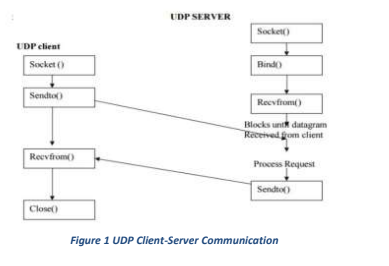
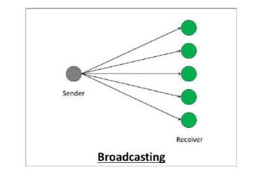
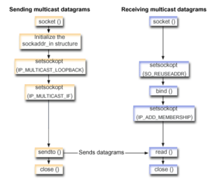

Home#
Assignments are at:
Year 2#
Year 3#
COE#
ENC#
Thapar ↵
Year2 ↵
UCS405 ↵
DMS#
Tutorial Sheet 1#
Tutorial Sheet 2#
Q1. Let 𝑃(𝑥), 𝑄(𝑥), 𝑅(𝑥), and 𝑆(𝑥) be the statements “𝑥 is a duck,” “𝑥 is one of my poultry,” “𝑥 is an officer,” and “𝑥 is willing to waltz,” respectively. Express each of these statements using quantifiers; logical connectives; and 𝑃(𝑥) , 𝑄(𝑥) , 𝑅(𝑥) , and 𝑆(𝑥) .#
a. No ducks are willing to waltz.
b. No officers ever decline to waltz.
c. All my poultry are ducks.
d. My poultry are not officers.
e. Does (d) follow from (a), (b), and c? If not, is there a correct conclusion?
Solution:#
Given:
- P(x) : "x is a duck"
- Q(x) : "x is one of my poultry"
- R(x) : "x is an officer"
- S(x) : "x is willing to waltz"
a. No ducks are willing to waltz.
This translates: "For all x, if x is a duck, then x is not willing to waltz."
$$ \forall x(P(x) \rightarrow \neg S(x)) $$
b. No officers ever decline to waltz.
This translates: "For all x, if x is an officer, then x is willing to waltz"
$$ \forall x(R(x) \rightarrow S(x)) $$
c. All my poultry are ducks.
This translates: "For all x, if x is one of my poultry, then x is a duck."
$$ \forall x(Q(x) \rightarrow P(x)) $$
d. My poultry are not officers.
This translates: "For all x, if x is one of my poultry, then x is not an officer."
$$ \forall x(Q(x) \rightarrow \neg R(x)) $$
e. Does (d) follow from (a), (b), and c? If not, is there a correct conclusion?
Let's analyze:
From (a): \forall x(P(x) \rightarrow \neg S(x)) (no ducks waltz).
From (b): \forall x(R(x) \rightarrow S(x)) (all officers waltz).
From c: \forall x(Q(x) \rightarrow P(x)) (all poultry are ducks)
We want to see if (d) \forall x(Q(x) \rightarrow \neg R(x)) follows logically.
If all poultry are ducks (from c), and no ducks waltz (from (a)), then none of the poultry waltz.
However, if all officers waltz (from (b)), and the poultry do not waltz, this implies that no poultry
are officers (because if they were officers, they would have to waltz, which contradicts (a)).
Thus, (d) does follow from (a), (b), and c.
Q2. Let 𝑃(𝑥), 𝑄(𝑥), and 𝑅(𝑥) be the statements “𝑥 is a professor,” “𝑥 is ignorant,” and “𝑥 is vain,” respectively. Express each of these statements using quantifiers; logical connectives; and 𝑃(𝑥) , 𝑄(𝑥) , and 𝑅(𝑥) , where the domain consists of all people.#
a. No professors are ignorant.
b. All ignorant people are vain.
c. No professors are vain.
d. Does c follow from (a) and (b)? Explain.
Solution:#
Given:
- P(x) : "x is a professor"
- Q(x) : "x is ignorant
- R(x) : "x is x is vain"
a. No professors are ignorant.
This translates: "For all x, if x is a professor, then x is not ignorant."
$$ \forall x(P(x) \rightarrow \neg Q(x)) $$
b. All ignorant people are vain.
This translates: "For all x, if x is ignorant, then x is vain"
$$ \forall x(Q(x) \rightarrow R(x)) $$
c. No professors are vain.
This translates: "For all x, if x is a professor, then x is not vain."
$$ \forall x(P(x) \rightarrow \neg R(x)) $$
d. Does c follow from (a) and (b)? Explain.
Let's analyze:
From (a): \forall x(P(x) \rightarrow \neg Q(x)) (no professors are ignorant).
From (b): \forall x(Q(x) \rightarrow R(x)) (ignorant people are vain).
We want to see if c \forall x(P(x) \rightarrow \neg R(x)) follows logically.
If no professors are ignorant (from (a)), and only ignorant people are vain (from (b)), we can infer that no professors are vain.
Here's the reasoning:
- From (a), if someone is a professor, they’re not ignorant ( \neg Q(x) ).
- From (b), we know only ignorant people are vain, so if a professor isn’t ignorant, they can’t be vain.
Thus, c does follow from (a), and (b).
Q3. Use rules of inference to show that the hypotheses “If it does not rain or if it is not foggy, then the sailing race will be held and the lifesaving demonstration will go on,” “If the sailing race is held, then the trop hy will be awarded,” and “The trophy was not awarded” imply the conclusion “It rained.”#
Solution:#
Let's break down the problem step by step using the rules of inference to show that the given hypotheses imply the conclusion "It rained."
Step 1: Label the statements#
- Let R represent "It rains."
- Let F represent "It is foggy."
- Let S represent "The sailing race is held."
- Let L represent "The lifesaving demonstration will go on."
- Let T represent "The trophy is awarded."
Step 2: Translate the hypotheses into logical statements#
-
"If it does not rain or if it is not foggy, then the sailing race will be held and the lifesaving demonstration will go on." This can be written as: (\neg R \lor \neg F) \rightarrow (S \land L)
-
"If the sailing race is held, then the trophy will be awarded." This is: S \rightarrow T
-
"The trophy was not awarded." This is: \neg T
Step 3: Use the rules of inference#
We are given the goal of proving that it rained, i.e., proving R .
-
From statement 3, we know that \neg T (the trophy was not awarded).
-
Using Modus Tollens on statement 2 (since S \rightarrow T and \neg T ), we can conclude: [ \neg S ] (The sailing race was not held.)
-
Now, use Modus Tollens again on statement 1, (\neg R \lor \neg F) \rightarrow (S \land L) , combined with \neg S . Since the sailing race was not held ( \neg S ), it means that \neg R \lor \neg F must be false for the implication to hold true. For \neg R \lor \neg F to be false, both \neg R and \neg F must be false. This means: [ R \land F ] (It rained, and it was foggy.)
Conclusion:#
From this reasoning, we have shown that the hypotheses logically imply that it rained. So the conclusion "It rained" ( R ) follows from the given premises using the rules of inference.
Q4. Consider#
Premises: If Claghorn has wide support, then he'll be asked to run for the senate. If Claghorn
yells "Eureka" in Iowa, he will not be asked to run for the senate. Claghorn yells "Eureka" in
Iowa.
Conclusion: Claghorn does not have wide support.
Determine whether the conclusion follows logically from the premises. Explain by
representing the statements symbolically and using rules of inference.
Solution:#
Let's break this down step by step to see if the conclusion logically follows from the premises. We'll represent the statements symbolically and apply the rules of inference to make everything clear.
Step 1: Define the statements#
- Let W represent "Claghorn has wide support."
- Let S represent "Claghorn will be asked to run for the senate."
- Let E represent "Claghorn yells 'Eureka' in Iowa."
Step 2: Translate the premises into symbolic form#
-
"If Claghorn has wide support, then he'll be asked to run for the senate." Symbolically: W \rightarrow S
-
"If Claghorn yells 'Eureka' in Iowa, he will not be asked to run for the senate." Symbolically: E \rightarrow \neg S
-
"Claghorn yells 'Eureka' in Iowa." Symbolically: E
Step 3: Apply the rules of inference#
We need to determine if the conclusion "Claghorn does not have wide support" (i.e., \neg W ) follows logically from these premises.
-
From premise 3, we know that E is true (Claghorn yells "Eureka" in Iowa).
-
Using Modus Ponens on premise 2 and E , we can conclude \neg S (Claghorn will not be asked to run for the senate).
-
Now, look at premise 1: W \rightarrow S (If Claghorn has wide support, then he'll be asked to run for the senate). We know that S is false because we just concluded \neg S .
-
Using Modus Tollens on premise 1 and \neg S , we can conclude \neg W (Claghorn does not have wide support).
Conclusion:#
Yes, the conclusion "Claghorn does not have wide support" ( \neg W ) follows logically from the premises. By representing the statements symbolically and using the rules of inference (specifically Modus Ponens and Modus Tollens), we’ve shown that the conclusion is valid.
Q5. Consider the following open propositions over the universe 𝑈 =#
𝑃(𝑥): 𝑥 ≥ 4
𝑄(𝑥): 𝑥2 = 25
𝑅(𝑥): 𝑠 is a multiple of 2
Find the truth values of
a. 𝑃(𝑥) \bigwedge 𝑅(𝑥)
b. [\neg𝑄(𝑥)] \bigwedge 𝑃(𝑥)
Let's work through this problem step by step, starting with the truth values for the given propositions.
Solution:#
Universe U = \{ -4, -2, 0, 1, 3, 5, 6, 8, 10 \} #
We are given three propositions: - P(x): x \geq 4 - Q(x): x^2 = 25 - R(x): x is a multiple of 2
a. P(x) \land R(x) #
We need to find the truth value of P(x) \land R(x) , which means x \geq 4 and x is a multiple of 2.
Go through each element in U : - x = -4 : P(x) is false (since -4 \not\geq 4 ), so P(x) \land R(x) is false. - x = -2 : P(x) is false, so P(x) \land R(x) is false. - x = 0 : P(x) is false, so P(x) \land R(x) is false. - x = 1 : P(x) is false, so P(x) \land R(x) is false. - x = 3 : P(x) is false, so P(x) \land R(x) is false. - x = 5 : P(x) is true (since 5 \geq 4 ), but R(x) is false (since 5 is not a multiple of 2), so P(x) \land R(x) is false. - x = 6 : P(x) is true and R(x) is true, so P(x) \land R(x) is true. - x = 8 : P(x) is true and R(x) is true, so P(x) \land R(x) is true. - x = 10 : P(x) is true and R(x) is true, so P(x) \land R(x) is true.
Truth values of P(x) \land R(x) : True for x = 6, 8, 10 .
b. \neg Q(x) \land P(x) #
Now let's find the truth value of \neg Q(x) \land P(x) , meaning x^2 \neq 25 and x \geq 4 .
Check each element in U : - x = -4 : Q(x) is false (since (-4)^2 \neq 25 ), and P(x) is false, so \neg Q(x) \land P(x) is false. - x = -2 : Q(x) is false and P(x) is false, so \neg Q(x) \land P(x) is false. - x = 0 : Q(x) is false and P(x) is false, so \neg Q(x) \land P(x) is false. - x = 1 : Q(x) is false and P(x) is false, so \neg Q(x) \land P(x) is false. - x = 3 : Q(x) is false and P(x) is false, so \neg Q(x) \land P(x) is false. - x = 5 : Q(x) is true (since 5^2 = 25 ), so \neg Q(x) \land P(x) is false. - x = 6 : Q(x) is false and P(x) is true, so \neg Q(x) \land P(x) is true. - x = 8 : Q(x) is false and P(x) is true, so \neg Q(x) \land P(x) is true. - x = 10 : Q(x) is false and P(x) is true, so \neg Q(x) \land P(x) is true.
Truth values of \neg Q(x) \land P(x) : True for x = 6, 8, 10 .
Q6. Express each of these sentences into logical expression using predicates, quantifiers, and logical connectives.#
a. No one is perfect.
b. Not everyone is perfect.
c. All your friends are perfect.
d. At least one of your friends is perfect.
e. Everyone is your friend and is perfect.
f. Not everybody is your friend or someone is not perfect.
g. At least one mail message, among the nonempty set of messages, can be saved if there.
is a disk with more than 10 kilobytes of free space.
h. Whenever there is an active alert , all queued messages are transmitted.
i. The diagnostic monitor tracks the status of all systems except the main console.
j. Each participant on the conference call whom the host.
Solution:#
Let’s turn these sentences into logical expressions using predicates, quantifiers, and logical connectives, while keeping it clear and understandable.
a. No one is perfect.#
Let P(x) represent “ x is perfect,” and the domain be all people. This can be written as: [ \forall x \, \neg P(x) ] This means: "For all x , x is not perfect."
b. Not everyone is perfect.#
Again, using P(x) to represent “ x is perfect,” this can be written as: [ \neg \forall x \, P(x) ] Or equivalently: [ \exists x \, \neg P(x) ] This means: "There exists at least one person who is not perfect."
c. All your friends are perfect.#
Let F(x) represent “ x is your friend,” and P(x) represent “ x is perfect.” This can be written as: [ \forall x \, (F(x) \rightarrow P(x)) ] This means: "For every x , if x is your friend, then x is perfect."
d. At least one of your friends is perfect.#
This can be written as: [ \exists x \, (F(x) \land P(x)) ] This means: "There exists at least one x such that x is your friend and x is perfect."
e. Everyone is your friend and is perfect.#
This can be written as: [ \forall x \, (F(x) \land P(x)) ] This means: "For all x , x is your friend and x is perfect."
f. Not everybody is your friend or someone is not perfect.#
This can be written as: [ \neg \forall x \, F(x) \lor \exists x \, \neg P(x) ] This means: "Not everyone is your friend, or there is at least one person who is not perfect."
g. At least one mail message, among the nonempty set of messages, can be saved if there is a disk with more than 10 kilobytes of free space.#
Let M(x) represent “ x is a mail message,” S(x) represent “ x can be saved,” and D(y) represent “Disk y has more than 10 kilobytes of free space.” This can be written as: [ \exists x \, (M(x) \land \exists y \, D(y) \rightarrow S(x)) ] This means: "There exists at least one mail message that can be saved if there is a disk with more than 10 kilobytes of free space."
h. Whenever there is an active alert, all queued messages are transmitted.#
Let A represent “There is an active alert,” and Q(x) represent “ x is a queued message,” and T(x) represent “ x is transmitted.” This can be written as: [ A \rightarrow \forall x \, (Q(x) \rightarrow T(x)) ] This means: "If there is an active alert, then for all x , if x is a queued message, then x is transmitted."
i. The diagnostic monitor tracks the status of all systems except the main console.#
Let D represent “The diagnostic monitor tracks the status,” S(x) represent “ x is a system,” and M represent “the main console.” This can be written as: [ \forall x \, (S(x) \land x \neq M \rightarrow D(x)) ] This means: "For all systems x , if x is not the main console, the diagnostic monitor tracks x ."
j. Each participant on the conference call whom the host invites can speak.#
Let P(x) represent “ x is a participant,” H(x) represent “The host invites x ,” and S(x) represent “ x can speak.” This can be written as: [ \forall x \, (P(x) \land H(x) \rightarrow S(x)) ] This means: "For every participant x , if the host invites x , then x can speak."
These translations express the meaning of each statement using logical symbols in a clear way, perfect for reasoning with predicates, quantifiers, and connectives.
Q7. Let 𝐷_{𝑥} = 𝑁 and 𝐷_{𝑦} = 𝑁^0 . Define 𝑃(𝑥, 𝑦) as “𝑥 divides 𝑦".#
Find the truth values along with proper reasons for the following quantified predicates:
i. \forall 𝑥 \hspace{0.2cm} 𝑃(𝑥, 0)
ii. \forall 𝑥 \hspace{0.2cm} 𝑃(𝑥, 𝑥)
iii. \forall 𝑦 \hspace{0.2cm} \exists 𝑥 \hspace{0.2cm} 𝑃(𝑥, 𝑦)
iv. \exists 𝑦 \hspace{0.2cm} \forall 𝑥 \hspace{0.2cm} 𝑃(𝑥, 𝑦)
v. \forall 𝑥 \hspace{0.2cm} \forall 𝑦 \hspace{0.2cm} [(𝑃(𝑥, 𝑦) \bigwedge 𝑃(𝑦, 𝑥)) \rightarrow (𝑥 = 𝑦)]
vi. \forall 𝑥 \hspace{0.2cm} \forall 𝑦 \hspace{0.2cm} \forall 𝑥 \hspace{0.2cm} [(𝑃(𝑥, 𝑦) \bigwedge 𝑃(𝑦, 𝑥)) \rightarrow 𝑃(𝑥, 𝑧)]
Solution:#
Let’s evaluate the truth values of these quantified predicates step by step using clear reasoning.
i. \forall x \, P(x, 0) #
This is asking whether every x divides 0. By definition, every integer divides 0 because 0 = x \times 0 for any x , so this statement is true.
Reason: For all integers x , x divides 0, since 0 \div x = 0 .
ii. \forall x \, P(x, x) #
This is asking whether every x divides itself. Clearly, any integer divides itself because x \div x = 1 . Therefore, this statement is true.
Reason: For any x , x \div x = 1 , so every x divides itself.
iii. \forall y \, \exists x \, P(x, y) #
This is asking if, for every y , there exists an x such that x divides y . This is true because for every integer y , x = 1 divides y .
Reason: x = 1 divides every integer y , so there exists at least one x (which is 1) that divides any y .
iv. \exists y \, \forall x \, P(x, y) #
This asks if there is some y such that all x divide y . This is true, since 0 is such a y — all integers divide 0.
Reason: y = 0 works because, as established earlier, every integer x divides 0.
v. \forall x \, \forall y \, [(P(x, y) \land P(y, x)) \rightarrow (x = y)] #
This is asking if x divides y and y divides x , does it imply x = y ? This is true, because if two integers divide each other, they must be equal (e.g., if 4 divides 4, then 4 and 4 are the same).
Reason: If x divides y and y divides x , it’s only possible when x = y .
vi. \forall x \, \forall y \, \forall z \, [(P(x, y) \land P(y, z)) \rightarrow P(x, z)] #
This is the transitive property of divisibility: if x divides y , and y divides z , then x must divide z . This is true because divisibility is transitive.
Reason: If x divides y , and y divides z , then x divides z . For example, if 2 divides 4, and 4 divides 8, then 2 divides 8.
These evaluations show how each logical expression holds based on the properties of divisibility within the set of integers.
Q8. Identify the error or errors in this argument that supposedly shows that if \forall 𝑥 (𝑃(𝑥) \bigvee 𝑄(𝑥)) is true then \forall 𝑥 𝑃(𝑥) \bigvee \forall 𝑥 𝑄(𝑥) is true.#
a. \forall x \hspace{0.2cm} (P(x) \bigvee Q(x)) Premise
b. P\(c \bigvee Qc ) Universal instantiation from (a)
c. P\(c ) Simplification from (b)
d. \forall x \hspace{0.2cm} P(x) Universal generalization from c
e. Q\(c ) Simplification from (b)
f. \forall x \hspace{0.2cm} Q(x) Universal generalization from (e)
g. \forall x \hspace{0.2cm} (P(x) \bigvee Q(x)) Conjunction from (d) and (f)
Solution:#
To understand why this argument doesn't work, let's break it down and identify the errors step by step:
- Premise:
\forall x \, (P(x) \vee Q(x)) states that for every x, either P(x) or Q(x) is true. So far, everything seems fine. - Universal Instantiation:
From the premise, we instantiate with a specific c, so we get P\(c \vee Qc ). This also holds since it's derived from the original universal statement. - Simplification:
Here's where things start to get tricky. The argument jumps to assuming P\(c) (and later Q\(c)) without justification. But all we know is that either P\(c) is true, or Q\(c) is true. You can't claim one or the other without further information. So, the error here is in assuming one part of the disjunction without ruling out the other. - Universal Generalization:
Moving from P\(c) to \forall x \, P(x) is a mistake. Just because something holds for one instance c, you can't generalize it to all x. This step violates the rules of universal generalization, which requires showing that P(x) holds for all x, not just one case. - Conjunction:
Finally, the argument combines \forall x \, P(x) and \forall x \, Q(x) , but neither of these are valid conclusions from the earlier steps. So, the whole argument falls apart here.
In summary:#
The errors are in assuming individual parts of a disjunction and incorrectly generalizing from specific instances to universal statements. This mix-up leads to the false conclusion that \forall x P(x) \vee \forall x Q(x) follows from \forall x (P(x) \vee Q(x)) .
Q9. Let k be a positive integer. Show that 1^k + 2^k + 3^k + \dots + n^k is O(n^{k+1}) .#
Solution:#
Step 1: Expressing the Sum
The Sum S(n) can be written as:
$$ S(n) = \sum_{i=1}^{n} i^k = 1^k + 2^k + 3^k + \dots + n^k $$
We want to show this sum grows asymptotically as O(n^{k+1}) .
Step 2: Estimating the Sum
To estimate the S(n) , we can compare it with an integral. The function f(x) = x^k increases as x increases, so:
$$ \int_{1}^{n} x^k dx \hspace{0.2 cm} and \int_{0}^{n} x^k dx $$
will provide good bounds for the sum.
1. Lower bound:
$$ \int_{1}^{n} x^k dx = \frac{n^{k+1}}{k+1} - \frac{1^{k+1}}{k+1} = \frac{n^{k+1}}{k+1} - \frac{1}{k+1} $$
2. Upper bound: $$ \int_{0}^{n} x^k dx = \frac{n^{k+1}}{k+1} $$
Thus, the sum S(n) is squeezed between two expressions that are propotional to n^{k+1}
Step 3: Asymptotic Growth Since the sum S(n) is bounded by integrals that are both propotional to n^{k+1}, we conclude that S(n) grows asymptotically like n^{k+1}. More formally: $$ S(n) = O(n^{k+1}) $$
Q10. Prove that if n is an integer and 3n + 2 is even, then n is even using#
a. proof by contraposition.
b. proof by contradiction.
Solution:#
a. Proof by Contraposition#
To prove that if 3n+2 is even, then n is even, we use proof by contraposition. In this method, we prove the contrapositive of the given statement:
If n is odd, then 3n+2 is odd.
Proof:
1. Assume n is odd. By definition of odd integers, we can write n=2k+1 , where k is an integer.
2. Now, consider 3n+2 :
$$ 3n+2 = 3 (2k + 1) + 2 = 6k + 3 + 2 = 6k + 5 $$
Since 6k + 5 = 2(3k+2) + 1 , this expression is odd (because it is of the form 2m+1 )
for some integer m .
3. Thus, if n is odd, 3n+2 is odd, which proves the contrapositive.
Since the contrapositive is true, the original statement is also true: If 3n+2 is even, then n is even.
b. Proof by Contradiction#
To prove that if 3n+2 is even, then n is even, we use proof by contradiction. we assume the opposite of what we want to prove and show that it leads to a contradiction.
Proof:
1. Assume 3n+2 is even but n is odd.
2. Since n is odd, we can write n = 2k+1 for some integer k .
3. Substitute n = 2k+1 into the expression 3n+2 :
$$ 3n+2 = 3 (2k + 1) + 2 = 6k + 3 + 2 = 6k + 5 $$
As shown earlier that 6k + 5
4. This contradicts our assumption that 3n+2 is even.
5. Therefore, our assumption that n is odd must be false. Hence, n must be even.
Thus, by contradiciton, if 3n+2 is even, n is even.
Q11. Proof by contrapositive that for every real number 𝑥 𝜖 [0, 𝜋/2], we have sin 𝑥 + cos 𝑥 ≥ 1.#
Solution:#
To prove that for any x \in [0, \pi/2] , \sin x + \cos x \geq 1 using the contrapositive, let's take a more straightforward approach.
Original statement:#
For every real number x \in [0, \pi/2] , \sin x + \cos x \geq 1 .
Contrapositive:#
The contrapositive of this statement is: If \sin x + \cos x < 1 , then x \notin [0, \pi/2] .
Now, let’s prove this.
Step 1: Start by assuming the contrapositive#
Assume that \sin x + \cos x < 1 . What we need to show is that this implies x cannot be in the interval [0, \pi/2] .
Step 2: Examine the sum of sine and cosine#
We know that in the interval [0, \pi/2] : - At x = 0 , \sin 0 = 0 and \cos 0 = 1 , so \sin 0 + \cos 0 = 1 . - At x = \pi/2 , \sin \pi/2 = 1 and \cos \pi/2 = 0 , so \sin \pi/2 + \cos \pi/2 = 1 .
For any x in between, the sum \sin x + \cos x is always at least 1. This makes sense because both sine and cosine are positive within this interval, and their squares sum to 1 (thanks to the Pythagorean identity: \sin^2 x + \cos^2 x = 1 ).
Step 3: Conclusion#
If \sin x + \cos x < 1 , then x can't be in [0, \pi/2] , because we've shown that within this range, the sum of sine and cosine is always at least 1. So, x must be outside of [0, \pi/2] .
By proving the contrapositive, we’ve effectively shown that for every x \in [0, \pi/2] , \sin x + \cos x \geq 1 , which is what we set out to prove.
Q12. What is wrong with the following proof? Explain your answer with a valid explanation.#
Prove that the statement \sqrt{2} + \sqrt{6} < \sqrt{15} is true.
“Proof”:
Step 1. \sqrt{2} + \sqrt{6} < \sqrt{15}
Step 2. (\sqrt{2} + √6)^2 < 15
Step 3. \sqrt{8} + 2\sqrt{12} < 15
Step 4. 2\sqrt{12} < 7
Step 5. 48 < 49
Solution:#
The error in the proof happens in Step 3, where there's a misunderstanding of how to handle squared terms. Let's break it down in a way that’s easy to follow:
-
Step 1: You're asked to prove \sqrt{2} + \sqrt{6} < \sqrt{15} .
-
Step 2: Squaring both sides to simplify things is okay. So, the inequality becomes: (\sqrt{2} + \sqrt{6})^2 < (\sqrt{15})^2 Expanding the left side gives: 2 + 6 + 2\sqrt{2 \times 6} = 8 + 2\sqrt{12} Now, the inequality is: 8 + 2\sqrt{12} < 15
-
Step 3: Here's where the mistake happens. The proof wrongly changes 8 into \sqrt{8} , which isn’t allowed. So, instead of \sqrt{8} + 2\sqrt{12} , it should have stayed as 8 + 2\sqrt{12} .
-
Step 4: From the correct form 8 + 2\sqrt{12} < 15 , we can move the 8 over: 2\sqrt{12} < 7 Dividing both sides by 2 gives: \sqrt{12} < 3.5 Squaring both sides results in: 12 < 12.25 Which is true, confirming the original statement.
So, the key issue is in Step 3, where the proof incorrectly simplifies 8 as \sqrt{8} , leading to a wrong direction. Otherwise, the inequality holds true.
Q13. Derive the formula for the following expression:#
$$ \frac{1}{2} + \frac{1}{4} + \frac{1}{8} + \cdot\cdot\cdot + \frac{1}{2^n} $$ Also prove the validity of your formula using mathematical induction.
Solution:#
Derivation of the formula#
This is a geometric series where the first term a=\frac{1}{2} and the common ratio r=\frac{1}{2} .
The sum of the first n terms of a geometric series is given by the formula:
$$ S_{n} = a \frac{1-r^n}{1-r} $$
Substitute the values of a = \frac{1}{2} and r = \frac{1}{2} into the formula:
$$ S_{n} = \frac{1}{2} \cdot \frac{1-(\frac{1}{2})^n}{1-\frac{1}{2}} = \frac{1}{2} \cdot \frac{1-\frac{1}{2^n}}{\frac{1}{2}} = 1-\frac{1}{2^n} $$
Thus, the formula for the sum of the series is:
$$ S_{n} = 1-\frac{1}{2^n} $$
Proof by Mathematical Induction#
We will now prove the formula S_{n} = 1-\frac{1}{2^n} using mathematical induction.
Best Case (n=1):#
When n=1 , the sum of the series is: $$ S_{1} = \frac{1}{2}$$ Using the formula for n = 1 : $$ S_{1} = 1-\frac{1}{2^1} = 1-\frac{1}{2} = \frac{1}{2}$$ Thus, the formula holds for n=1 .
Inductive Step:#
Assume the formula is true for n = k , i.e., $$ S_{k} = 1 - \frac{1}{2^k} $$ We need to prove that the formula holds for n = k+1 , i.e., $$ S_{k+1} = 1 - \frac{1}{2^{k+1}} $$ From the Assumption, the sum up to n = k is: $$ S_{k} = 1 - \frac{1}{2^k} $$ To find S_{k+1} , we add the next term \frac{1}{2^{k+1}} to S_{k} : $$ S_{k+1} = S_{k} + \frac{1}{2^{k+1}} = \left( 1 - \frac{1}{2^k} \right) + \frac{1}{2^{k+1}} $$ Simplifying the right-hand side: $$ S_{k+1} = 1 - \frac{1}{2^k} + \frac{1}{2^{k+1}} = 1 - \frac{1}{2^k} \left( 1 - \frac{1}{2} \right) $$ $$ S_{k+1} = 1 - \frac{1}{2^k}\cdot \frac{1}{2} = 1 - \frac{1}{2^{k+1}} $$ Thus, the formula holds for n = k+1 .
Conclusion:#
By the principle of mathematical induction, the formula S_n = 1 - \frac{1}{2^n} is valid for all n \geq 1 .
Ended: UCS405
Ended: Year2
Year3 ↵
COE ↵
UCS410 ↵
Probability#
Assignment 1#
Q1. Create a vector c = [5, 10, 15, 20, 25, 30] and write a program which returns the maximum and minimum of this vector.#
c = c(5, 10, 15, 20, 25, 30)
max_c = max(c)
min_c = min(c)
cat("1.\n")
cat("Maximum value of c is:", max_c, "\n")
cat("Minimum value of c is:", min_c, "\n")
Q2. Write a program in R to find factorial of a number by taking input from user. Please print error message if the input number is negative.#
factorial_c = function(n) {
if (n < 0) {
return("Error: Factorial of a negative number is undefined.")
} else if (n == 0) {
return(1)
} else {
return(n * factorial_c(n - 1))
}
}
n = as.integer(readline(prompt="Enter a number: "))
res = factorial_c(n)
cat("Factorial of", n, "is:", res, "\n")
Q3. Write a program to write first n terms of a Fibonacci sequence. You may take n as an input from the user.#
fib_sequence = function(n) {
if (n <= 0) {
return("Error: Please enter a positive integer.")
} else {
fib = numeric(n)
fib[1] = 0
if (n > 1) fib[2] = 1
for (i in 3:n) {
fib[i] = fib[i - 1] + fib[i - 2]
}
return (fib)
}
}
n = as.integer(readline(prompt="Enter the number of Fibonacci terms: "))
fib_seq = fib_sequence(n)
cat("Fibonacci Sequence till", n, "is:", fib_seq, "\n")
Q4. Write an R program to make a simple calculator which can add, subtract, multiply and divide.#
calculator = function(x, y, operation) {
switch(operation,
"add" = c("+",x + y),
"subtract" = c("-",x - y),
"multiply" = c("*",x * y),
"divide" = if (y != 0) c("/",x / y) else return("Error: Division by zero.")
)
}
x = as.numeric(readline(prompt="Enter first number: "))
y = as.numeric(readline(prompt="Enter second number: "))
operation = readline(prompt="Enter operation (add, subtract, multiply, divide): ")
res = calculator(x, y, operation)
cat(x, res[1], y, "is:", res[2], "\n")
Q5. Explore plot, pie, barplot etc. (the plotting options) which are built-in functions in R.#
x = 1:10
y = x^2
plot(x, y, main="Basic Plot", xlab="x-axis", ylab="y-axis", col="blue", pch=19)
# Box Plot
data <- list(A = rnorm(100, mean = 5), B = rnorm(100, mean = 10), C = rnorm(100, mean = 15))
boxplot(data, main = "Box Plot Example", xlab = "Categories", ylab = "Values")
legend("topright", legend = c("A", "B", "C"), fill = c("white", "white", "white"))
# Pie Chart
slices = c(10, 20, 30, 40)
labels = c("A", "B", "C", "D")
pie(slices, labels=labels, main="Basic Pie Chart")
# Bar Plot
counts_matrix <- matrix(c(10, 15, 20, 25, 12, 18, 22, 28), nrow = 2, ncol = 4, byrow = TRUE)
barplot(counts_matrix, beside = TRUE, main = "Bar Plot with Multiple Bars",
xlab = "Categories", ylab = "Counts", col = c("green", "blue"),
legend = c("Group 1", "Group 2"))
# Histogram
hist_data <- rnorm(100, mean = 50, sd = 10)
hist(hist_data, main = "Histogram Example", xlab = "Value", col = "purple", border = "black", breaks = 10)
# Scatter Plot
x_sc = rnorm(100)
y_sc = x_sc + rnorm(100, mean=0.5)
plot(x_sc, y_sc, main="Scatter Plot", xlab="x-axis", ylab="y-axis", col="red", pch=19)
legend("topright", legend = "Scatter Points", col = "red", pch = 19)
Assignment 2#
Q1.#
(a) Suppose there is a chest of coins with 20 gold, 30 silver and 50 bronze coins.
You randomly draw 10 coins from this chest. Write an R code which will give us the
sample space for this experiment.
(use of sample(): an in-built function in R)
(b) In a surgical procedure, the chances of success and failure are 90% and 10% respectively.
Generate a sample space for the next 10 surgical procedures performed.
(use of prob(): an in-built function in R)
1. (a)#
chest = c(rep("gold", 20), rep("silver", 30), rep("bronze", 50))
# Randomly draw 10 coins
draw = sample(chest, size=10, replace=FALSE)
cat("1. (a) Sample Size:", draw, "\n");
1. (b)#
outcomes = c("Success", "Failure")
probabilities = c(0.9, 0.1)
surgery_out = sample(outcomes, size=10, replace=TRUE, prob=probabilities)
cat(" (b) Sample Space for next 10 surgical procedures:", surgery_out, "\n")
Q2. A room has n people, and each has an equal chance of being born on any of the 365 days of the year. (For simplicity, we’ll ignore leap years). What is the probability that two people in the room have the same birthday?#
(a) Use an R simulation to estimate this for various n.
(b) Find the smallest value of n for which the probability of a match is greater than 5.
2. (a)#
birth_sim = function(n, trials = 10000) {
count = 0
for (i in 1:trials) {
birth = sample(1:365, size=n, replace=TRUE)
if (length(unique(birth)) < n) {
count = count + 1
}
}
return (count / trials)
}
cat("2. (a) Probability of matching birthdays for n = 1 to 50:\n")
for (n in 1:50) {
cat(" For n =", n, "probability of matching birthdays is:", birth_sim(n), "\n")
}
2. (b)#
small_n = function() {
n = 1
while (birth_sim(n) < 0.5) {
n = n + 1
}
return(n)
}
cat(" (b) Smallest n for which probability of matching birthdays is just above 50% is:", small_n(), "\n")
Q3. Write an R function for computing conditional probability. Call this function to do the following problem:#
suppose the probability of the weather being cloudy is 40%. Also suppose the probability of rain on a given day is 20% and that the probability of clouds on a rainy day is 85%. If it’s cloudy outside on a given day, what is the probability that it will rain that day?
cond_prob = function(p_a_and_b, p_b) {
return(p_a_and_b / p_b)
}
p_cloudy = 0.4
p_rain = 0.2
p_cloud_and_rain = 0.85
p_cloudy_given_rain <- 0.85
# Calculate P(rain and cloudy)
p_rain_and_cloudy <- p_rain * p_cloudy_given_rain
# Calculate conditional probability
p_rain_given_cloudy <- cond_prob(p_rain_and_cloudy, p_cloudy)
# Output the result
cat("3. Probability of Rain Given Cloudy is:", p_rain_given_cloudy, "\n")
Q4. The iris dataset is a built-in dataset in R that contains measurements on 4 different attributes (in centimeters) for 150 flowers from 3 different species. Load this dataset and do the following:#
(a) Print first few rows of this dataset.
(b) Find the structure of this dataset.
c Find the range of the data regarding the sepal length of flowers.
(d) Find the mean of the sepal length.
(e) Find the median of the sepal length.
(f) Find the first and the third quartiles and hence the interquartile range.
(g) Find the standard deviation and variance.
(h) Try doing the above exercises for sepal.width, petal.length and petal.width.
(i) Use the built-in function summary on the dataset Iris.
data(iris)
cat("4. (a) Head of the iris dataset:\n")
# 4. (a) Displaying the first few rows of the iris dataset
print(head(iris))
cat("\n4. (b) Structure of the iris dataset:\n")
# 4. (b) Displaying the structure of the iris dataset
str(iris)
cat("\n4. (c) Range of Sepal.Length:\n")
# 4. (c) Finding the range of Sepal.Length
cat("Range:", range(iris$Sepal.Length), "\n")
cat("\n4. (d) Mean of Sepal.Length:\n")
# 4. (d) Calculating the mean of Sepal.Length
cat("Mean:", mean(iris$Sepal.Length), "\n")
cat("\n4. (e) Median of Sepal.Length:\n")
# 4. (e) Calculating the median of Sepal.Length
cat("Median:", median(iris$Sepal.Length), "\n")
cat("\n4. (f) Interquartile Range of Sepal.Length:\n")
# 4. (f) Calculating the Interquartile Range (IQR) of Sepal.Length
quartiles <- quantile(iris$Sepal.Length, probs = c(0.25, 0.75))
IQR <- quartiles[2] - quartiles[1]
cat("1st Quartile:", quartiles[1], "3rd Quartile:", quartiles[2], "\n")
cat("Interquartile Range (IQR):", IQR, "\n")
cat("\n4. (g) Standard Deviation and Variance of Sepal.Length:\n")
# 4. (g) Calculating the standard deviation and variance of Sepal.Length
cat("Standard Deviation:", sd(iris$Sepal.Length), "\n")
cat("Variance:", var(iris$Sepal.Length), "\n")
cat("\n4. (h) Mean of Sepal.Width, Petal.Length, and Petal.Width:\n")
# 4. (h) Calculating the mean of Sepal.Width, Petal.Length, and Petal.Width
cat("Mean of Sepal.Width:", mean(iris$Sepal.Width), "\n")
cat("Mean of Petal.Length:", mean(iris$Petal.Length), "\n")
cat("Mean of Petal.Width:", mean(iris$Petal.Width), "\n")
cat("\n4. (i) Summary of the Iris Dataset:\n")
# 4. (i) Displaying the summary of the iris dataset
print(summary(iris))
Q5. R does not have a standard in-built function to calculate mode. So we create a user function to calculate mode of a data set in R. This function takes the vector as input and gives the mode value as output.#
gmode = function(v) {
uniqv = unique(v)
uniqv[which.max(tabulate(match(v, uniqv)))]
}
v = c(2, 3, 3, 5, 5, 5, 7)
cat("5. Mode among [", paste(v, collapse = ", "), "] is:", gmode(v), "\n")
Assignment 3#
Q1. Roll 12 dice simultaneously, and let X denotes the number of 6’s that appear. Calculate the probability of getting 7, 8 or 9, 6’s using R.#
(Try using the function pbinom(); If we set S = {get a 6 on one roll}, P(S) = 1/6 and the rolls constitute Bernoulli trials; thus X ∼ binom(size=12, prob=1/6) and we are looking for P(7 ≤ X ≤ 9) .
size = 12
prob = 1/6
p_7_to_9 = pbinom(9, size, prob) - pbinom(6, size, prob)
cat("1. Probability of getting 7, 8 or 9, 6’s is:", p_7_to_9, "\n")
Q2. Assume that the test scores of a college entrance exam fits a normal distribution. Furthermore, the mean test score is 72, and the standard deviation is 15.2. What is the percentage of students scoring 84 or more in the exam?#
mean = 72
sd = 15.2
p_84_or_more = 1 - pnorm(84, mean, sd)
cat("2. Percentage of students scoring 84 or more in the exam is:", p_84_or_more * 100, "%\n")
Q3. On the average, five cars arrive at a particular car wash every hour. Let X count the number of cars that arrive from 10AM to 11AM, then X ∼ Poisson(λ = 5) . What is probability that no car arrives during this time. Next, suppose the car wash above is in operation from 8AM to 6PM, and we let Y be the number of customers that appear in this period. Since this period covers a total of 10 hours, we get that Y ∼ Poisson(λ = 5 × 10 = 50) . What is the probability that there are between 48 and 50 customers, inclusive?#
# a. Probability that no car arrives between 10 AM and 11 AM
p_no_car = dpois(0, lambda=5)
cat("1. (a) Probability that no car arrives between 10 AM and 11 AM is: ", p_no_car, "\n")
# b. Probability that between 48 and 50 customers arrive between 8AM and 6PM (10 hours)
# - P(48 <= Y <= 50) = P(Y <= 50) - P(Y <= 47)
p_48_to_50 = ppois(50, lambda=5*10) - ppois(47, lambda=5*10)
cat(" (b) Probability that between 48 and 50 customers arrive between 8AM and 6PM is:", p_48_to_50, "\n")
Q4. Suppose in a certain shipment of 250 Pentium processors there are 17 defective processors. A quality control consultant randomly collects 5 processors for inspection to determine whether or not they are defective. Let X denote the number of defectives in the sample. Find the probability of exactly 3 defectives in the sample, that is, find P(X = 3).#
# Parameters for the hypergeometric distribution
m = 17 # number of defective processors
n = 250 - 17 # number of non-defective processors
k = 5 # sample size
# P(X = 3) for X ~ Hypergeometric(m = 17, n = 233, k = 5)
p_exactly_3_defectives = dhyper(3, m, n, k)
cat("4. Probability of exactly 3 defectives in the sample is:", p_exactly_3_defectives, "\n")
Q5. A recent national study showed that approximately 44.7% of college students have used Wikipedia as a source in at least one of their term papers. Let X equal the number of students in a random sample of size n = 31 who have used Wikipedia as a source.#
(a) How is X distributed?
(b) Sketch the probability mass function.
(c) Sketch the cumulative distribution function.
(d) Find mean, variance and standard deviation of X
# 5. (a) Distribution of X
cat("5. (a) X is distributed as Binomial with parameters n = 31 and p = 0.447:\n")
cat("X ~ Binomial(n = 31, p = 0.447)\n")
# 5. (b) Sketch the Probability Mass Function (PMF)
n <- 31
p <- 0.447
x_vals <- 0:n
pmf_vals <- dbinom(x_vals, n, p)
# Plot the PMF
plot(x_vals, pmf_vals, type = "h", lwd = 2, col = "blue",
xlab = "Number of Students Using Wikipedia", ylab = "Probability",
main = "Probability Mass Function of X")
grid()
# 5. (c) Sketch the Cumulative Distribution Function (CDF)
# Calculate the CDF
cdf_vals <- pbinom(x_vals, n, p)
# Plot the CDF
plot(x_vals, cdf_vals, type = "s", lwd = 2, col = "red",
xlab = "Number of Students Using Wikipedia", ylab = "Cumulative Probability",
main = "Cumulative Distribution Function of X")
grid()
# 5. (d) Find mean, variance, and standard deviation of X
mean_x <- n * p
variance_x <- n * p * (1 - p)
sd_x <- sqrt(variance_x)
cat("\n5. (d) Mean, Variance, and Standard Deviation of X:\n")
cat("Mean of X: ", mean_x, "\n")
cat("Variance of X: ", variance_x, "\n")
cat("Standard Deviation of X: ", sd_x, "\n")s
Assignment 4#
Q1. The probability distribution of X, the number of imperfections per 10 meters of a synthetic fabric in continuous rolls of uniform width, is given as#
| x | 0 | 1 | 2 | 3 | 4 |
|---|---|---|---|---|---|
| p(x) | 0.41 | 0.37 | 0.16 | 0.05 | 0.01 |
Find the average number of imperfections per 10 meters of this fabric.
(Try functions sum( ), weighted.mean( ), c(a %*% b) to find expected value/mean.
# Define the values of X and their probabilities
x = c(0, 1, 2, 3, 4)
p_x = c(0.41, 0.37, 0.16, 0.05, 0.01)
# Calculate the expected value using weighted.mean
expected_value = weighted.mean(x, p_x)
expected_value_matrix <- c(x %*% p_x)
if (expected_value == expected_value_matrix) {
cat("1. Expected values are the same\n")
} else {
cat("1. Expected values are different\n")
}
Q2. The time T, in days, required for the completion of a contracted project is a random variable with probability density function f(t) = 0.1 e^{(-0.1t)} for t > 0 and 0 otherwise. Find the expected value of T.#
Use function integrate() to find the expected value of continuous random variable T.
f = function(t) {
return(0.1 * exp(-0.1 * t))
}
expected_value_t = integrate(function(t) t * f(t), lower = 0, upper = Inf)$value
cat("2. Expected value of T is: ", expected_value_t, "\n")
Q3. A bookstore purchases three copies of a book at $6.00 each and sells them for $12.00 each. Unsold copies are returned for $2.00 each. Let X = {number of copies sold} and Y = {net revenue}. If the probability mass function of X is#
| x | 0 | 1 | 2 | 3 |
|---|---|---|---|---|
| p(x) | 0.1 | 0.2 | 0.2 | 0.5 |
Find the expected value of Y.
x = c(0, 1, 2, 3)
p_x = c(0.1, 0.2, 0.2, 0.5)
# Net Revenue = (Revenue from sold books) - (Cost of purchased books) + (Refund from unsold books)
Y = function(x) {
return((12 * x - 6 * 3) + (3 - x) * 2)
}
expected_value_y = sum(p_x * Y(x))
cat("3. Expected value of Y is:", expected_value_y, "\n")
Q4. Find the first and second moments about the origin of the random variable X with probability density function f(x) = 0.5e^{-|x|} , 1 < x < 10 and 0 otherwise. Further use the results to find Mean and Variance.#
(kth moment = E(X^k) , Mean = first moment and Variance = second moment – Mean^2 .
# Define the probability density function f(x)
f_x = function(x) {
return(0.5 * exp(-abs(x)))
}
# Calculate the first moment (Mean)
first_moment = integrate(function(x) x * f_x(x), lower = 1, upper = 10)$value
# Calculate the second moment
second_moment = integrate(function(x) x^2 * f_x(x), lower = 1, upper = 10)$value
# Mean and variance
mean_x = first_moment
variance_x = second_moment - mean_x^2
# Output the results
cat("4. Mean and Variance of X\n")
cat("Mean of X is:", mean_x, "\n")
cat("Variance of X is:", variance_x, "\n")
Q5. Let X be a geometric random variable with probability distribution#
Write a function to find the probability distribution of the random variable Y = X^2 and find probability of Y for X = 3 . Further, use it to find the expected value and variance of Y for X = 1,2,3,4,5 .
# Define the geometric probability function
f_X = function(x) {
(3/4) * (1/4)^(x - 1)
}
# Define the function to calculate P(Y = X^2)
f_Y = function(x) {
f_X(x)
}
X = 3
Y = X^2
prob_Y = f_Y(X)
cat("Probability of Y at X =", X, "is", prob_Y, "\n")
# Function to compute expected value and variance of Y for X = 1, 2, 3, 4, 5
expected_value_Y = 0
variance_Y = 0
x_values = 1:5
# Calculate expected value of Y = X^2
for (x in x_values) {
Y = x^2
expected_value_Y = expected_value_Y + Y * f_X(x)
variance_Y = variance_Y + Y^2 * f_X(x)
}
# Adjust variance by subtracting mean squared
variance_Y = variance_Y - expected_value_Y^2
cat("5. Expected value and Variance of Y\n")
cat("Expected value of Y is:", expected_value_Y, "\n")
cat("Variance of Y is:", variance_Y, "\n")
Assignment 5#
1. Consider that X is the time (in minutes) that a person has to wait in order to take a flight. If each flight takes off each hour X \sim U(0, 60). Find the probability that
#
(a) waiting time is more than 45 minutes, and
(b) waiting time lies between 20 and 30 minutes.
min = 0
max = 60
# (a) P(X > 45)
P_more_45 = 1 - punif(45, min, max)
# (b) P(20 <= X <= 30)
P_20_30 = punif(30, min, max) - punif(20, min, max)
cat("P(X > 45) = ", P_more_45, "\nP(20 <= X <= 30) = ", P_20_30, "\n")
2. The time (in hours) required to repair a machine is an exponential distributed random variable with parameter \lambda = \frac{1}{2} .
#
(a) Find the value of density function at x = 3.
(b) Plot the graph of exponential probability distribution for 0 \leq x \leq 5 .
(c) Find the probability that a repair time takes at most 3 hours.
(d) Plot the graph of cumulative exponential probabilities for 0 \leq x \leq 5 .
(e) Simulate 1000 exponential distributed random numbers with \lambda = \frac{1}{2} and plot the
simulated data.
lambda = 1/2
# (a) Value at density at x = 3
density_at_3 = dexp(3, lambda)
# (b) Plot of exponential probability distribution for 0 <= x <= 5
x = seq(0, 5, 0.01)
y = dexp(x, rate = lambda)
plot(x, y, type = "l", col = "blue", xlab = "x", ylab = "Density", main = "Exponential Probability Distribution")
# (c) Probability that a repair time takes at most 3 hours
p_at_most_3 = pexp(3, rate = lambda)
# (d) Plot the graph of cummilative exponential probabilities for 0 <= x <= 5
y_cdf = pexp(x, rate = lambda)
plot(x, y_cdf, type = "l", col = "red", xlab = "x", ylab = "Cumulative Probability", main = "Exponential Cumulative Probability Distribution")
# (e) Simulate 1000 exponential random numbers and plot
sim_data = rexp(1000, rate = lambda)
hist(sim_data, breaks, freq = FALSE, col = "green", xlab = "x", ylab = "Frequency", main = "Simulated Exponential Random Numbers")
cat("Density at x = 3: ", density_at_3, "\n")
cat("P(X <= 3) = ", p_at_most_3, "\n")
3. The lifetime of certain equipment is described by a random variable X that follows Gamma distribution with parameters \alpha = 2 and \beta = \frac{1}{3} .
#
(a) Find the probability that the lifetime of equipment is
(i) 3 units of time, and
(ii) at least 1 unit of time.
(b) What is the value of c, if P(X \leq c) \geq 0.70 ? (Hint: try quantile function qgamma())
alpha = 2
beta = 1/3
# (a) Probability that the lifetime of equipment is
# (i) P(X <= 3)
P_leq_3 = pgamma(3, shape = alpha, rate = beta)
# (ii) P(X >= 1)
P_geq_1 = 1 - pgamma(1, shape = alpha, rate = beta)
# (b) Find c such that P(X <= c) >= 0.70
c_val = qgamma(0.70, shape = alpha, rate = beta)
cat("P(X <= 3):", P_leq_3, "\n")
cat("P(X >= 1):", P_geq_1, "\n")
cat("Value of c (P(X <= c) >= 0.70)", c_val, "\n")
Assignment 6#
(1) The joint probability density of two random variables X and Y is#
Then write a R-code to
(i) check that it is a joint density function or not? (Use integral2())
(ii) find marginal distribution g(x) at x = 1.
(iii) find the marginal distribution h(y) at y = 0.
(iv) find the expected value of g(x, y) = xy.
f_xy = function(x,y) {
ifelse(0 <= x & x <= 1 & 0 <= y & y <= 1, 2*(2*x + 3*y)/5, 0)
}
# (i) Check if it is a joint density function
check = integral2(function(x,y) f_xy(x, y), xmin = 0, xmax = 1, ymin = 0, ymax = 1)
# (ii) Find the marginal distribution g(x) at x = 1
g_x = function(x) {
integrate(function(y) f_xy(x, y), lower = 0, upper = 1)$value
}
g_x_at_1 = g_x(1)
# (iii) Find the marginal distribution h(y) at y = 0
h_y = function(y){
integrate(function(x) f_xy(x, y), lower = 0, upper = 1)$value
}
h_y_at_0 = h_y(0)
# (iv) Find the expected value of g(x, y) = xy
exp_val = integral2(function(x, y) x*y*f_xy(x, y), xmin = 0, xmax = 1, ymin = 0, ymax = 1)$value
cat("Integral over the domain (should equal 1):", check$value, "\n")
cat("Marginal distribution g(x) at x = 1:", g_x_at_1, "\n")
cat("Marginal distribution h(y) at y = 0:", h_y_at_0, "\n")
cat("Find the expected value of g(x, y) = xy:", exp_val, "\n")
(2) The joint probability mass function of two random variables X and Y is#
Then write a R-code to
(i) display the joint mass function in rectangular (matrix) form.
(ii) check that it is joint mass function or not? (use: Sum())
(iii) find the marginal distribution g(x) for x = 0, 1, 2, 3. (Use: apply())
(iv) find the marginal distribution h(y) for y = 0, 1, 2. (Use: apply())
(v) find the conditional probability at x = 0 given y = 1.
(vi) find E(x), E(y), E(xy), V ar(x), V ar(y), Cov(x, y) and its correlation coefficient.
x_vals = 0:3
y_vals = 0:2
# (i) Display the joint mass function in rectangular (matrix) form
joint_pmf = outer(x_vals, y_vals, function(x, y) (x + y)/30)
rownames(joint_pmf) = paste("x =", x_vals)
colnames(joint_pmf) = paste("y =", y_vals)
# (ii) Check if it is a joint mass function
total_prob = sum(joint_pmf)
# (iii) Find the marginal distribution g(x) for x = 0, 1, 2, 3
g_x = apply(joint_pmf, 1, sum)
# (iv) Find the marginal distribution h(y) for y = 0, 1, 2
h_y = apply(joint_pmf, 2, sum)
# (v) Find the conditional probability at x = 0 given y = 1
P_y_1 = h_y[2]
p_x_0_given_y_1 = joint_pmf[1, 2]/P_y_1
# (vi) Find E(x), E(y), E(xy), Var(x), Var(y), Cov(x, y) and its correlation coefficient
E_x = sum(x_vals*g_x)
E_y = sum(y_vals*h_y)
E_xy = sum(outer(x_vals, y_vals, function(x, y) x*y)*joint_pmf)
Var_x = sum((x_vals - E_x)^2*g_x)
Var_y = sum((y_vals - E_y)^2*h_y)
Cov_xy = E_xy - E_x*E_y
corr = Cov_xy/sqrt(Var_x*Var_y)
cat("Joint PMF:\n", capture.output(print(joint_pmf)), sep="\n")
cat("Total Probabiltiy (equal to 1):", total_prob, "\n")
cat("Marginal distribution g(x) for x = 0, 1, 2, 3:", g_x, "\n")
cat("Marginal distribution h(y) for y = 0, 1, 2:", h_y, "\n")
cat("P(x = 0 | y = 1):", p_x_0_given_y_1, "\n")
cat("E(X):", E_x, "\nE(y):", E_y, "\nE(xy):", E_xy, "\nVar(x):", Var_x "\nVar(y):", Var_y, "\nCov(x, y):", Cov_xy, "\nCorrelation Coefficient:", corr, "\n")
Assignment 7#
(1) Use the rt(n, df) function in r to investigate the t-distribution for n = 100 and df = n − 1 and plot the histogram for the same.#
n = 100; df = n-1
t_vals = rt(n, df)
hist(t_vals, breaks = 30, freq = FALSE, xlab = "Values", main = "Histogram of t-Distribution (n = 100, df = 99)")
lines(density(t_vals), col = "blue")
(2) Use the rchisq(n, df) function in r to investigate the chi-square distribution with n = 100 and df = 2, 10, 25.#
n = 100; df_vals = c(2, 10, 25)
chi_sq_vals = lapply(df_vals, function(df) {
hist(rchisq(n, df), breaks = 30, freq = FALSE, xlab = "Values", main = paste("Histogram of Chi-Square Distribution (n = 100, df =", df, ")")
})
par(mfrow = c(1, 1))
(3) Generate a vector of 100 values between -6 and 6. Use the dt() function in r to find the values of a t-distribution given a random variable x and degrees of freedom 1,4,10,30. Using these values plot the density function for students t-distribution with degrees of freedom 30. Also shows a comparison of probability density functions having different degrees of freedom (1,4,10,30).#
x = seq(-6, 6, length = 100); df_vals = c(1, 4, 10, 30)
dense_vals = lapply(df_vals, function(df) dt(x, df))
plot(x, dense_vals[, 4], type = "l", main = "t-Density (df=30)", xlab = "x", ylab = "Density")
plot(x, dense_vals[, 1], type = "l", col = 1, main = "Comparison of t-Densities", xlab = "x", ylab = "Density")
lapply(2:4, function(i) lines(x, dense_vals[, i], col = i))
legend("topright", legend = paste("df=", df_vals), col = 1:4, lwd = 2)
(4) Write a r-code#
(i) To find the 95th percentile of the F-distribution with (10, 20) degrees of freedom.
(ii) To calculate the area under the curve for the interval [0, 1.5] and the interval [1.5, +∞) of a F-curve with v1 = 10 and v2 = 20 (use pf()).
(iii) To calculate the quantile for a given area (= probability) under the curve for a F-curve with v1 = 10 and v2 = 20 that corresponds to q = 0.25, 0.5, 0.75 and 0.999. (use the qf())
(iv) To generate 1000 random values from the F-distribution with v1 = 10 and v2 = 20 (use rf())and plot a histogram.
v1 = 10 v2 = 20
# (i) 95th percentile of F-distribution with (10, 20) degrees of freedom
qf_95_percentile = qf(0.95, v1, v2)
# (ii) Area under the curve for the interval [0, 1.5] and [1.5, +∞) of F-curve with v1 = 10 and v2 = 20
pf_0_1_5 = pf(1.5, v1, v2); pf_1_5_inf = 1 - pf_0_1_5
# (iii) Quantile for a given area under the curve for F-curve with v1 = 10 and v2 = 20 that corresponds to q = 0.25, 0.5, 0.75 and 0.999
qf_vals = qf(c(0.25, 0.5, 0.75, 0.999), v1, v2)
# (iv) Generate 1000 random values from F-distribution with v1 = 10 and v2 = 20 and plot a histogram
rf = rf(1000, v1, v2)
hist(rf, breaks = 30, freq = FALSE, main = "F-Distribution (10,20)", xlab = "Values")
cat("95th percentile of F-distribution with (10, 20) degrees of freedom: ", qf_95_percentile, "\n")
cat("Area under the curve for the interval [0, 1.5] of F-curve with v1 = 10 and v2 = 20: ", pf_0_1_5, " and [1.5, +∞): ", pf_1_5_inf, "\n")
cat("Quantile for a given area under the curve for F-curve with v1 = 10 and v2 = 20 that corresponds to q = 0.25, 0.5, 0.75 and 0.999: ", qf_vals, "\n")
Assignment 8#
1. A pipe manufacturing organization produces different kinds of pipes. We are given the monthly data of the wall thickness of certain types of pipes (data is available on LMS Clt-data.csv).#
The organization has an analysis to perform and one of the basic assumption of that analysis is that the data should be normally distributed.
You have the following tasks to do:
(a) Import the csv data file in R.
(b) Validate data for correctness by counting number of rows and viewing the top ten rows of the dataset.
(c) Calculate the population mean and plot the observations by making a histogram.
(d) Mark the mean computed in last step by using the function abline.
See the red vertical line in the histogram? That’s the population mean. Comment on
whether the data is normally distributed or not?
Now perform the following tasks:
(a) Draw sufficient samples of size 10, calculate their means, and plot them in R by making histogram. Do you get a normal distribution.
(b) Now repeat the same with sample size 50, 500 and 9000. Can you comment on what you observe.
Here, we get a good bell-shaped curve and the sampling distribution approaches normal distribution as the sample sizes increase. Therefore, we can recommend the organization to use sampling distributions of mean for further analysis.
# (a) Import the csv
data = read.csv("Clt-data.csv")
# (b) Validate data
cat("Number of rows:", nrow(data), "\n")
cat("Top 10 rows:\n", capture.output(head(data, 10)), sep = "\n")
# (c) Calculate population mean and plot histogram
pop_mean = mean(data$WallThickness, na.rm = TRUE)
cat("Population mean:", pop_mean, "\n")
hist(data$WallThickness, breaks = 30, freq = FALSE, col = "lightblue", xlab = "Wall Thickness", main = "Wall Thickness of Pipes")
# (d) Mark the mean in histogram
abline(v = pop_mean, col = "red", lwd = 2, lty = 2)
# (a) Draw samples of size 10
sample_means_10 = replicate(1000, mean(sample(data$WallThickness, 10, replace = TRUE)))
cat("Sample mean for size 10:", mean(sample_means_10), "\n")
# (b) Draw samples of size 50, 500, 9000
sample_sizes = c(50, 500, 9000)
for (n in sample_sizes) {
sample_means = replicate(1000, mean(sample(data$WallThickness, n, replace = TRUE)))
cat("Sample mean for size", n, ":", mean(sample_means), "\n")
}
2. The following table gives information on ages and cholesterol levels for a random sample of 10 men#
| Age | 58 | 69 | 43 | 39 | 63 | 52 | 47 | 31 | 74 | 36 |
|---|---|---|---|---|---|---|---|---|---|---|
| Cholesterol | 189 | 235 | 193 | 177 | 154 | 191 | 213 | 165 | 198 | 181 |
Plot the scatter diagram and a regression line that will enable us to predict Cholesterol level on age. Further, estimate the cholesterol level of a 60 year-old man.
age = c(58, 69, 43, 39, 63, 52, 47, 31, 74, 36)
cholesterol = c(189, 235, 193, 177, 154, 191, 213, 165, 198, 181)
model = lm(cholesterol ~ age)
plot(age, cholesterol, pch = 16, col = "blue", xlab = "Age", ylab = "Cholesterol", main = "Cholesterol vs Age")
abline(model, col = "red", lwd = 2)
cat("Predicted cholesterol for age 60:", predict(model, newdata = data.frame(age = 60)), "\n")
3. A research methodology course has recently been added to the PhD curriculum at the Thapar Institute of Engineering and Technology, Patiala. To evaluate its effectiveness, students take a test on formulating research problems and writing research papers both before and after completing the course. Below are the marks for a random sample of ten students:#
| Before the test | 145 | 173 | 158 | 141 | 167 | 159 | 154 | 167 | 145 | 153 |
|---|---|---|---|---|---|---|---|---|---|---|
| After the test | 155 | 167 | 156 | 149 | 168 | 162 | 158 | 169 | 157 | 161 |
Assume that the differences between the pre-course and post-course test scores are normally distributed, and a high score on the test indicates a strong level of assertiveness. Do the collected data, at 5% level of significance, provide enough evidence to conclude that research scholars become more assertive after completing the course?
before = c(145, 173, 158, 141, 167, 159, 154, 167, 145, 153)
after = c(155, 167, 156, 149, 168, 162, 158, 169, 157, 161)
res = t.test(after - before, alternative = "greater")
print(res)
Ended: UCS410
UCS413 ↵
NP#
Assignment 1#
Learn to configure telnet, ftp, and SSH server on Unix platforms.#
a) Install and configure FTP Server on Ubuntu with vsftpd.
b) Install and configure Telent Server on Ubuntu with telnetd.
c) Install and configure SSH Server on Ubuntu with OpenSSH.
The step by step procedure for installation and configuration of FTP, Telnet and SSH is provided for your help.
a) Install and configure FTP Server on Ubuntu with vsftpd.#
-
Update package index and Install FTP.
sudo apt update && sudo apt install vsftpd -
Configure the FTP server
sudo nano /etc/vsftpd.conf -
Add the following configurations to the
vsftpd.conffile.listen=YES # allows listening listen_ipv6=NO # disable listening for IPv6 anonymous_enable=NO # disable anonymous access local_enable=YES # enable local user access write_enable=YES # enable the FTP to be editable # Optional Configurations chroot_local_user=YES # confines users to their home directory allow_writeable_chroot=YES # allows home directory for each user to editable -
Restart the vsftpd service.
sudo systemctl restart vsftpd -
Allow FTP though Firewall.
sudo ufw allow 21/tcp sudo ufw reload -
Test the FTP server.
ftp localhost
b) Install and configure Telent Server on Ubuntu with telnetd.#
-
Update package index and Install Telnet.
sudo apt update && sudo apt install telnetd -
Configure Telnet Server.
sudo systemctl enable telnet.service sudo systemctl start telnet.service -
Allow Telnet though Firewall.
sudo ufw allow 23/tcp sudo ufw reload -
Test the server
telnet localhost
c) Install and Configure SSH Server with OpenSSH#
-
Update package index and Install OpenSSH.
sudo apt update && sudo apt install openssh-server -
Configure OpenSSH server
sudo nano /etc/ssh/sshd_config -
Uncomment the following lines
Port 22 # port for SSH PermitRootLogin no # disable root login over SSH PasswordAuthentication # allow password Authentication -
Restart the SSH service.
sudo systemctl restart ssh -
Allow SSH through Firewall.
sudo ufw allow 22/tcp sudo ufw reload -
Test the SSH server.
ssh username@localhost
Assignment 2#
Q1. Learn about socket header files and basic system calls.#
Socket header files contain data definitions, structures, constants, macros, and options used by socket subroutines. An application program must include the appropriate header file to make use of structures or other information a particular socket subroutine requires.
Commonly used socket header files are:#
/usr/include/netinet/in.hDefines Internet constants and structures./usr/include/netdb.hContains data definitions for socket subroutines./usr/include/sys/socket.hContains data definitions and socket structures./usr/include/sys/types.hContains data type definitions./usr/include/arpa.hContains definitions for internet operations./usr/include/sys/errno.hDefines the error no values that are returned by drivers and other kernel-level code.
Elementary socket system calls:#
socket()System Call: Creates an end point for communication and returns a descriptor:
int socket (int AddressFamily, int Type, int Protocol);-
Bind()System call: Binds a name to a socket. The bind subroutine assigns a Name parameter to an unnamed socket. It assigns a local protocol address to a socket.int bind (int sockfd, struct sockaddr *myaddr, int addrlen); -
connect()System call: The connect function is used by a TCP client to establish a connection with a TCP server.int connect(int sockfd, struct sockaddr *servaddr, int addrlen); -
listen()System call: This system call is used by a connection-oriented server to indicate that it is willing to receive connections.int listen (int sockfd, int backlog); -
accept()System call: The actual connection from some client process is waited for by having the server execute the accept system call.int accept (int sockfd, struct sockaddr *cliaddr, int *addrlen); -
send(),sendto(),recv()andrecvfrom()System calls: These system calls are similar to the standard read and write functions. close()system call: The normal Unix close function is also used to close a socket and terminate a TCP connection.int close (int sockfd);
Q2. Create an Echo-Server using TCP socket programming in connection- oriented Scenario. Echo Server echo back (return back) the message sent by the client. Also, write the Client side program. While creating program focus on the use of following socket programming functions. socket(), sockaddr_in, bind(), listen(), accept(), ntohs(), ntohl(), read()/recv(), write()/send() , connect().#
Steps to be followed:#
Server Side:#
- Include appropriate header files.
- Create a TCP Socket.
- Bind the address and port using bind() system call.
- Server executes listen() system call to indicate its willingness to receive connections.
- Accept the next completed connection from the client process by using an accept() system call. At this point, connection is established between client and server, and they are ready to transfer data.
- Receive a message from the Client using recv()/read() system call.
- Send the received message back(echo) to the client using send()/write() system call.
- Close the socket using close() system call.
Client Side:#
- Include appropriate header files
- Create a TCP Socket.
- Establish connection to the Server using connect() system call.
- Send and recieve messages using send() and recv() system call respectively.
- Close the socket using close() system call
Echo Server#
/* Copyright 2024 Keys */
**include**{: .hash} <stdio.h>
**include**{: .hash} <stdlib.h>
**include**{: .hash} <string.h>
**include**{: .hash} <unistd.h>
**include**{: .hash} <sys/types.h>
**include**{: .hash} <sys/socket.h>
**include**{: .hash} <netinet/in.h>
**define**{: .hash} PORT 12345
void error(const char *msg) {
perror(msg);
exit(1);
}
int main(int argc, char *argv[]) {
int sockfd, newsockfd, portno;
socklen_t clilen;
char buffer[256];
struct sockaddr_in serv_addr, cli_addr;
int n;
// Create a TCP socket
sockfd = socket(AF_INET, SOCK_STREAM, 0);
if (sockfd < 0)
error("ERROR opening socket");
// Bind the address and port
memset((char *) &serv_addr, 0, sizeof(serv_addr));
portno = PORT;
serv_addr.sin_family = AF_INET;
serv_addr.sin_addr.s_addr = INADDR_ANY;
serv_addr.sin_port = htons(portno);
if (bind(sockfd, (struct sockaddr *) &serv_addr, sizeof(serv_addr)) < 0)
error("ERROR on binding");
// Listen for incoming connections
listen(sockfd, 5);
clilen = sizeof(cli_addr);
// Accept a connection
newsockfd = accept(sockfd, (struct sockaddr *) &cli_addr, &clilen);
if (newsockfd < 0)
error("ERROR on accept");
// Receive a message from the client
memset(buffer, 0, 256);
n = read(newsockfd, buffer, 255);
if (n < 0) error("ERROR reading from socket");
printf("Received: %s\n", buffer);
// Echo the message back to the client
n = write(newsockfd, buffer, strlen(buffer));
if (n < 0) error("ERROR writing to socket");
// Close the socket
close(newsockfd);
close(sockfd);
return 0;
}
Echo Client#
/* Copyright 2024 Keys */
**include**{: .hash} <stdio.h>
**include**{: .hash} <stdlib.h>
**include**{: .hash} <unistd.h>
**include**{: .hash} <string.h>
**include**{: .hash} <sys/types.h>
**include**{: .hash} <sys/socket.h>
**include**{: .hash} <netinet/in.h>
**include**{: .hash} <netdb.h>
**define**{: .hash} PORT 12345
void error(const char *msg) {
perror(msg);
exit(0);
}
int main(int argc, char *argv[]) {
int sockfd, portno, n;
struct sockaddr_in serv_addr;
struct hostent *server;
char buffer[256];
if (argc < 2) {
fprintf(stderr,"usage %s hostname\n", argv[0]);
exit(0);
}
// Create a TCP socket
sockfd = socket(AF_INET, SOCK_STREAM, 0);
if (sockfd < 0)
error("ERROR opening socket");
server = gethostbyname(argv[1]);
if (server == NULL) {
fprintf(stderr,"ERROR, no such host\n");
exit(0);
}
// Establish connection to the server
memset((char *) &serv_addr, 0, sizeof(serv_addr));
portno = PORT;
serv_addr.sin_family = AF_INET;
memcpy((char *)&serv_addr.sin_addr.s_addr, (char *)server->h_addr, server->h_length);
serv_addr.sin_port = htons(portno);
if (connect(sockfd,(struct sockaddr *) &serv_addr,sizeof(serv_addr)) < 0)
error("ERROR connecting");
// Send a message to the server
printf("Please enter the message: ");
memset(buffer, 0, 256);
fgets(buffer, 255, stdin);
n = write(sockfd, buffer, strlen(buffer));
if (n < 0)
error("ERROR writing to socket");
// Receive the echo back from the server
memset(buffer, 0, 256);
n = read(sockfd, buffer, 255);
if (n < 0)
error("ERROR reading from socket");
printf("%s\n", buffer);
// Close the socket
close(sockfd);
return 0;
}
Assignment 3#
Objective: Create an Echo-Server using UDP socket programming in connection-less.#
Echo Server echo back (return back) the message sent by the client. Also, write the Client side program. While creating
program focus on the use of following socket programming functions:
socket(), sockaddr_in, bind(), sendto(), recvfrom(), ntohs(), ntohl().
Steps to be followed:#
Server Side:#
- Include appropriate header files.
- Create a UDP Socket.
- Create an address by using server’s IP address and server port with
sockaddr_in(). - Bind the address and port using
bind()system call. - Receive a message from the Client using
recvfrom()system call. - Send the received message back(echo) to the client using sendto() system call.
- Close the socket using
close()system call
Client Side:#
- Include appropriate header files
- Create a UDP Socket.
- Create an address by using server’s IP address and server port with sockaddr_in().
- Send and receive messages using
sendto()andrecvfrom()system call respectively. - Close the socket using
close()system call
Hint: UDP Client-Server Communication Architecture 
Echo Server#
/* Copyright 2024 Keys */
**include**{: .hash} <stdio.h>
**include**{: .hash} <stdlib.h>
**include**{: .hash} <string.h>
**include**{: .hash} <arpa/inet.h>
**include**{: .hash} <unistd.h>
**define**{: .hash} PORT 12345
**define**{: .hash} BUFFER_SIZE 1024
int main() {
int sockfd, n;
char buffer[BUFFER_SIZE];
struct sockaddr_in server_addr, client_addr;
socklen_t addr_len = sizeof(client_addr);
sockfd = socket(AF_INET, SOCK_DGRAM, 0);
if (sockfd < 0) {
perror("Socket creation failed");
exit(EXIT_FAILURE);
}
// Fill Server information
memset(&server_addr, 0, sizeof(server_addr));
server_addr.sin_family = AF_INET;
server_addr.sin_addr.s_addr = INADDR_ANY;
server_addr.sin_port = htons(PORT);
// Bind the socket with the server address
if (bind(sockfd, (const struct sockaddr *)&server_addr, sizeof(server_addr)) < 0){
perror("Binding failed!");
exit(EXIT_FAILURE);
}
printf("Server is listening on %d...\n", PORT);
while(1) {
memset(buffer, 0, BUFFER_SIZE);
n = recvfrom(sockfd, buffer, BUFFER_SIZE, MSG_WAITALL, (struct sockaddr *)&client_addr, &addr_len);
buffer[n] = '\0';
printf("Client: %s\n", buffer);
sendto(sockfd, buffer, n, MSG_CONFIRM, (const struct sockaddr *)&client_addr, addr_len);
printf("Message echoed back to client.\n");
}
close(sockfd);
return 0;
}
Echo Client#
/* Copyright 2024 Keys */
**include**{: .hash} <stdio.h>
**include**{: .hash} <stdlib.h>
**include**{: .hash} <string.h>
**include**{: .hash} <arpa/inet.h>
**include**{: .hash} <unistd.h>
**define**{: .hash} PORT 12345
**define**{: .hash} BUFFER_SIZE 1024
int main() {
int sockfd;
char buffer[BUFFER_SIZE];
struct sockaddr_in server_addr;
socklen_t addr_len = sizeof(server_addr);
sockfd = socket(AF_INET, SOCK_DGRAM, 0);
if (sockfd < 0) {
perror("Socket creation failed");
exit(EXIT_FAILURE);
}
memset(&server_addr, 0, sizeof(server_addr));
server_addr.sin_family = AF_INET;
server_addr.sin_port = htons(PORT);
server_addr.sin_addr.s_addr = INADDR_ANY;
addr_len = sizeof(server_addr);
while(1){
memset(buffer, 0, BUFFER_SIZE);
printf("Enter message: ");
fgets(buffer, BUFFER_SIZE, stdin);
buffer[strlen(buffer) - 1] = '\0';
sendto(sockfd, buffer, strlen(buffer), MSG_CONFIRM, (const struct sockaddr *)&server_addr, addr_len);
memset(buffer, 0, BUFFER_SIZE);
recvfrom(sockfd, buffer, BUFFER_SIZE, MSG_WAITALL, (struct sockaddr *)&server_addr, &addr_len);
printf("Server: %s\n", buffer);
}
close(sockfd);
return 0;
}
Assignment 4#
Objective: Create a Chat application using TCP socket programming in connection- oriented Scenario.#
In Chat application server and client application can chat with each other through text messages. The chat ends when server or client application sends “exit” message.
Steps to be followed:#
Server Side:#
- Include appropriate header files.
- Create a TCP Socket.
- Bind the address and port using
bind()system call. - Server executes
listen()system call to indicate its willingness to receive connections. - Accept the next completed connection from the client process by using an
accept()system call. At this point, connection is established between client and server, and they are ready to transfer data. - Receive a message from the Client using
recv()/read()system call. - Send the received message back(echo) to the client using
send()/write()system call. - Close the socket using
close()system call
Client Side:#
- Include appropriate header files
- Create a TCP Socket.
- Establish connection to the Server using
connect()system call. - Send and recieve messages using
send()andrecv()system call respectively. - Close the socket using
close()system call
Chat Server#
/* Copyright 2024 Keys */
#include <stdio.h>
#include <stdlib.h>
#include <string.h>
#include <unistd.h>
#include <arpa/inet.h>
#define PORT 12345
#define BUFFER_SIZE 1024
void reverse_str(char *str) {
int n = strlen(str);
for (int i = 0; i < n / 2; i++) {
char tmp = str[i];
str[i] = str[n - i - 1];
str[n - i - 1] = tmp;
}
}
int main() {
int server_fd, new_socket;
struct sockaddr_in address;
int addrlen = sizeof(address);
char buffer[BUFFER_SIZE] = {0};
if ((server_fd = socket(AF_INET, SOCK_STREAM, 0)) == 0) {
perror("Socket failed");
exit(EXIT_FAILURE);
}
address.sin_family = AF_INET;
address.sin_addr.s_addr = INADDR_ANY;
address.sin_port = htons(PORT);
if (bind(server_fd, (struct sockaddr *)&address, sizeof(address)) < 0) {
perror("Binding failed");
exit(EXIT_FAILURE);
}
// Listen for incoming connections
if (listen(server_fd, 3) < 0) {
perror("Listen failed");
exit(EXIT_FAILURE);
}
// Accept incoming connection
if ((new_socket = accept(server_fd, (struct sockaddr *)&address, (socklen_t*)&addrlen)) < 0) {
perror("Accept failed");
exit(EXIT_FAILURE);
}
printf("Client Connected.\n");
while(1) {
memset(buffer, 0, BUFFER_SIZE);
int read_bytes = recv(new_socket, buffer, BUFFER_SIZE, 0);
if (read_bytes <= 0) {
printf("Client disconnected.\n");
break;
}
buffer[strcspn(buffer, "\r\n")] = 0;
printf("Client: %s\n", buffer);
if (strncmp(buffer, "exit", 4) == 0) {
printf("Server exiting...\n");
break;
}
reverse_str(buffer);
send(new_socket, buffer, strlen(buffer), 0);
printf("Server: %s\n", buffer);
}
close(new_socket);
close(server_fd);
return 0;
}
Chat Client#
/* Copyright 2024 Keys */
#include <stdio.h>
#include <stdlib.h>
#include <string.h>
#include <unistd.h>
#include <arpa/inet.h>
#define PORT 12345
#define BUFFER_SIZE 1024
int main() {
int sock = 0;
struct sockaddr_in server_addr;
char buffer[BUFFER_SIZE] = {0};
if ((sock = socket(AF_INET, SOCK_STREAM, 0)) < 0) {
perror("Socket creation failed");
exit(EXIT_FAILURE);
}
//
server_addr.sin_family = AF_INET;
server_addr.sin_port = htons(PORT);\
// Convert IP Addreesses to binary form
if (inet_pton(AF_INET, "127.0.0.1", &server_addr.sin_addr) <= 0) {
perror("Connection Failed");
close(sock);
exit(EXIT_FAILURE);
}
// Connect to the server
if (connect(sock, (struct sockaddr*)&server_addr, sizeof(server_addr)) < 0) {
perror("Connection failed");
close(sock);
exit(EXIT_FAILURE);
}
printf("Connected to server\n");
while(1) {
printf("You: ");
fgets(buffer, BUFFER_SIZE, stdin);
// Send a message to the server
send(sock, buffer, strlen(buffer), 0);
if(strncmp(buffer, "exit", 4) == 0) {
printf("Client exiting...\n");
break;
}
memset(buffer, 0, BUFFER_SIZE);
// Recieve the message from the server
int read_bytes = recv(sock, buffer, BUFFER_SIZE, 0);
if (read_bytes <= 0) {
printf("Server disconnected.\n");
break;
}
printf("Server: %s\n", buffer);
}
close(sock);
return 0;
}
Assignment 5#
Objective: Implement Chat application between server and client using UDP socket programming in a connection-less scenario.#
In Chat application server and client application can chat with each other through text messages. The chat ends when server or client application sends “exit” message.
Steps:#
Server Side:#
- Include appropriate header files.
- Create a UDP Socket.
- Create an address by using server’s IP address and server port with sockaddr_in().
- Bind the address and port using bind() system call.
- Receive a message from the Client using recvfrom() system call.
- Send the received message back(echo) to the client using sendto() system call.
- Close the socket using close() system call
Client Side:#
- Include appropriate header files
- Create a UDP Socket.
- Create an address by using server’s IP address and server port with sockaddr_in().
- Send and receive messages using sendto() and recvfrom() system call respectively.
- Close the socket using close() system call
Chat Server#
/* Copyright 2024 Keys */
#include <stdio.h>
#include <stdlib.h>
#include <string.h>
#include <sys/socket.h>
#include <unistd.h>
#include <arpa/inet.h>
#define PORT 12345
#define BUFFER_SIZE 1024
void reverse_str(char *str) {
int n = strlen(str);
for (int i = 0; i < n / 2; i++) {
char tmp = str[i];
str[i] = str[n - i - 1];
str[n - i - 1] = tmp;
}
}
int main() {
int sockfd;
struct sockaddr_in server_addr, client_addr;
socklen_t addr_len = sizeof(client_addr);
char buffer[BUFFER_SIZE] = {0};
ssize_t recv_len;
if ((sockfd = socket(AF_INET, SOCK_DGRAM, 0)) < 0) {
perror("Socket creation failed");
exit(EXIT_FAILURE);
}
server_addr.sin_family = AF_INET;
server_addr.sin_addr.s_addr = INADDR_ANY;
server_addr.sin_port = htons(PORT);
// Binding Socket to address and port
if (bind(sockfd, (struct sockaddr *)&server_addr, sizeof(server_addr)) < 0) {
perror("Binding Failed");
exit(EXIT_FAILURE);
}
printf("Server is listening on port %d...\n", PORT);
while(1) {
recv_len = recvfrom(sockfd, buffer, BUFFER_SIZE - 1, 0, (struct sockaddr *)&client_addr, &addr_len);
if (recv_len < 0) {
perror("Failed to receive message");
exit(EXIT_FAILURE);
}
buffer[recv_len] = '\0';
// Print the recieved message
printf("Client: %s\n", buffer);
if (strcmp(buffer, "exit") == 0) {
printf("Server exiting...\n");
break;
}
reverse_str(buffer);
// Echo the message back to the client
if (sendto(sockfd, buffer, recv_len, 0, (struct sockaddr *)&client_addr, addr_len) < 0) {
perror("Failed to send message");
close(sockfd);
exit(EXIT_FAILURE);
}
}
close(sockfd);
return 0;
}
Chat Client#
/* Copyright 2024 Keys */
#include <stdio.h>
#include <stdlib.h>
#include <string.h>
#include <unistd.h>
#include <arpa/inet.h>
#define PORT 12345
#define BUFFER_SIZE 1024
int main() {
int sockfd;
char buffer[BUFFER_SIZE] = {0};
struct sockaddr_in server_addr;
socklen_t addr_len = sizeof(server_addr);
size_t recv_len;
if ((sockfd = socket(AF_INET, SOCK_DGRAM, 0)) < 0) {
perror("Socket Creation Failed.");
exit(EXIT_FAILURE);
}
server_addr.sin_family = AF_INET;
server_addr.sin_addr.s_addr = INADDR_ANY;
server_addr.sin_port = htons(PORT);
while(1) {
printf("Enter a message: ");
fgets(buffer, BUFFER_SIZE, stdin);
buffer[strcspn(buffer, "\n")] = 0;
// Send message to server
if (sendto(sockfd, buffer, strlen(buffer), 0, (struct sockaddr *)&server_addr, addr_len) < 0) {
perror("Send failed");
close(sockfd);
exit(EXIT_FAILURE);
}
// Check for exit condition
if (strcmp(buffer, "exit") == 0) {
printf("Exiting...\n");
break;
}
// Receive response from server
recv_len = recvfrom(sockfd, buffer, BUFFER_SIZE - 1, 0, (struct sockaddr *)&server_addr, &addr_len);
if (recv_len < 0) {
perror("Receive failed");
close(sockfd);
exit(EXIT_FAILURE);
}
buffer[recv_len] = '\0'; // Null-terminate the received string
printf("Server: %s\n", buffer);
}
close(sockfd);
return 0;
}
Assignment 6#
Objective: WAP to implement broadcasting using connectionless socket programming.#
Each network segment has a corresponding broadcast address. Take the class C network segment
192.168.1.x as an example, where the smallest address 192.168.1.0 represents the network
segment; and the largest address 192.168.1.255 is the broadcast address in the network segment.
When we want to send a data packet to this address, all hosts on the network segment will receive
and process it.

Note: Broadcast packets are sent and received through UDP sockets.
The broadcast packet sending process is as follows:
a) Create a UDP socket; socket(AF_INET, SOCK_DGRAM, 0)
b) Fill the broadcast information structure; struct sockaddr_in
c) Set socket options to allow broadcast packets to be sent; setsockopt(,--- ,SO_BROADCAST,-------)
d) Send data packet; sendto()
The broadcast packet receiving process is as follows:#
a) Create a UDP socket; socket(AF_INET, SOCK_DGRAM, 0)
b) Fill the broadcast information structure; struct sockaddr_in
c) Bind address and port; bind()
d) Receive data packet; recvfrom()
Broadcast Sender#
/* Copyright 2024 Keys */
#include <asm-generic/socket.h>
#include <stdio.h>
#include <string.h>
#include <stdlib.h>
#include <arpa/inet.h>
#include <sys/socket.h>
#include <unistd.h>
int main() {
int sock;
struct sockaddr_in server;
int broadcast = 1;
char *message = "Hello, Broadcast";
sock = socket(AF_INET, SOCK_DGRAM, 0);
if (sock < 0 ) {
perror("Socket creation failed");
exit(EXIT_FAILURE);
}
if (setsockopt(sock, SOL_SOCKET, SO_BROADCAST, &broadcast, sizeof(broadcast)) < 0) {
perror("Failed to set socket option");
exit(EXIT_FAILURE);
}
memset(&server, 0, sizeof(server));
server.sin_family = AF_INET;
server.sin_addr.s_addr = inet_addr("192.168.1.255");
server.sin_port = htons(12345);
if (sendto(sock, message, strlen(message), 0, (struct sockaddr *)&server, sizeof(server)) < 0) {
perror("Failed to send message");
close(sock);
exit(EXIT_FAILURE);
}
close(sock);
return 0;
}
Broadcast Reciever#
/* Copyright 2024 Keys */
#include <stdio.h>
#include <stdlib.h>
#include <string.h>
#include <unistd.h>
#include <arpa/inet.h>
#include <sys/socket.h>
#define BUFFER_SIZE 1024
int main() {
int sock;
struct sockaddr_in recv_addr, cli_addr;
socklen_t cli_addr_len;
char buffer[BUFFER_SIZE];
// Create socket
sock = socket(AF_INET, SOCK_DGRAM, 0);
if (sock < 0) {
perror("Socket creation failed");
exit(EXIT_FAILURE);
}
// Set up the receiver address
memset(&recv_addr, 0, sizeof(recv_addr));
recv_addr.sin_family = AF_INET;
recv_addr.sin_port = htons(12345);
recv_addr.sin_addr.s_addr = INADDR_ANY;
// Bind the socket
if (bind(sock, (struct sockaddr*)&recv_addr, sizeof(recv_addr)) < 0) {
perror("Binding failed");
close(sock);
exit(EXIT_FAILURE);
}
printf("Receiver is listening on port 12345...\n");
// Receive data
cli_addr_len = sizeof(cli_addr);
ssize_t recv_len = recvfrom(sock, buffer, BUFFER_SIZE - 1, 0, (struct sockaddr *)&cli_addr, &cli_addr_len);
if (recv_len < 0) {
perror("Failed to receive message");
close(sock);
exit(EXIT_FAILURE);
}
// Null-terminate and print the received message
buffer[recv_len] = '\n';
printf("Received Message: %s\n", buffer);
// Close the socket
close(sock);
return 0;
}
Assignment 7#
Objective: WAP to implement multicasting using socket programming.#

Steps need to preform multicasting for connection-less client/server communication are:
Sequence of API calls for sending multicast datagrams:#
- Create an
AF_INET,SOCK_DGRAMtype socket. - Initialize a
sockaddr_instructure. - Set the
IP_MULTICAST_LOOPsocket option according to whether the sending system should receive a copy of the multicast datagrams that are transmitted. - Set the
IP_MULTICAST_IFsocket option to define the local interface over which you want to send the multicast datagrams. - Send the datagram.
Sequence of API calls for receiving multicast datagrams:#
- Create an
AF_INET,SOCK_DGRAMtype socket. - Set the
SO_REUSEADDRoption to allow multiple applications to receive datagrams that are destined to the same local port number. - Use the bind() verb to specify the local port number. Specify the IP address as INADDR_ANY in order to receive datagrams that are addressed to a multicast group.
- Use the
IP_ADD_MEMBERSHIPsocket option to join the multicast group that receives the datagrams. When joining a group, specify the class D group address along with the IP address of a local interface. The system must call theIP_ADD_MEMBERSHIPsocket option for each local interface receiving the multicast datagrams. - Receive the datagram.
Multicast Sender#
/* Copyright 2024 Keys */
#include <stdio.h>
#include <stdlib.h>
#include <string.h>
#include <unistd.h>
#include <arpa/inet.h>
#include <sys/socket.h>
#define MULTICAST_GROUP "239.0.0.1"
#define PORT 12345
#define BUFFER_SIZE 1024
int main() {
int sock;
struct sockaddr_in multicast_addr;
char *message = "Hello, Multicast";
struct ip_mreq mreq;
int loop = 1;
if ((sock = socket(AF_INET, SOCK_DGRAM, 0)) < 0) {
perror("Socker Creation Failed");
exit(EXIT_FAILURE);
}
memset(&multicast_addr, 0, sizeof(multicast_addr));
multicast_addr.sin_family = AF_INET;
multicast_addr.sin_addr.s_addr = inet_addr(MULTICAST_GROUP);
multicast_addr.sin_port = htons(PORT);
if (setsockopt(sock, IPPROTO_IP, IP_MULTICAST_LOOP, &loop, sizeof(loop)) < 0) {
perror("Unable to set socket option");
close(sock);
exit(EXIT_FAILURE);
}
struct in_addr local_interface;
local_interface.s_addr = INADDR_ANY;
if(setsockopt(sock, IPPROTO_IP, IP_MULTICAST_IF, &local_interface, sizeof(local_interface)) < 0) {
perror("Unable to set socket option");
close(sock);
exit(EXIT_FAILURE);
}
if(sendto(sock, message, strlen(message), 0, (struct sockaddr *)&multicast_addr, sizeof(multicast_addr)) < 0) {
perror("Send Failed");
close(sock);
exit(EXIT_FAILURE);
} else {
printf("Message sent to multicast group %s on port %d\n", MULTICAST_GROUP, PORT);
}
close(sock);
return 0;
}
Multicast Receiver#
/* Copyright 2024 Keys */
#include <stdio.h>
#include <stdlib.h>
#include <string.h>
#include <sys/types.h>
#include <unistd.h>
#include <arpa/inet.h>
#include <sys/socket.h>
#define MULTICAST_GROUP "239.0.0.1"
#define PORT 12345
#define BUFFER_SIZE 1024
int main() {
int sock;
struct sockaddr_in recv_addr;
struct ip_mreq mreq;
char buffer[BUFFER_SIZE];
socklen_t addr_len;
if ((sock = socket(AF_INET, SOCK_DGRAM, 0)) < 0) {
perror("Socker Creation Failed");
exit(EXIT_FAILURE);
}
int reuse = 1;
if (setsockopt(sock, SOL_SOCKET, SO_REUSEADDR, &reuse, sizeof(sock)) < 0) {
perror("Unable to set socket option");
close(sock);
exit(EXIT_FAILURE);
}
memset(&recv_addr, 0, sizeof(recv_addr));
recv_addr.sin_family = AF_INET;
recv_addr.sin_addr.s_addr = INADDR_ANY;
recv_addr.sin_port = htons(PORT);
if (bind(sock, (struct sockaddr*)&recv_addr, sizeof(recv_addr)) < 0) {
perror("Bind Failed");
close(sock);
exit(EXIT_FAILURE);
}
mreq.imr_multiaddr.s_addr = inet_addr(MULTICAST_GROUP);
mreq.imr_interface.s_addr = INADDR_ANY;
if(setsockopt(sock, IPPROTO_IP, IP_ADD_MEMBERSHIP, &mreq, sizeof(mreq)) < 0){
perror("Unable to set socket option");
close(sock);
exit(EXIT_FAILURE);
}
printf("Receiver is listening on port 12345...\n");
addr_len = sizeof(recv_addr);
ssize_t recv_len = recvfrom(sock ,buffer, BUFFER_SIZE - 1, 0, (struct sockaddr *)&recv_addr, &addr_len);
if (recv_len < 0) {
perror("Receive Failed");
close(sock);
exit(EXIT_FAILURE);
}
buffer[recv_len] = '\0';
printf("Received: %s\n", buffer);
close(sock);
return 0;
}
Ended: UCS413
Ended: COE
ENC ↵
UNC303 ↵
OS#
Assignment 1#
Q1. Introduction to Various Linux Operating Systems and Basic Commands#
Various Linux Distributions#
Linux is an open-source operating system that is widely used for a variety of purposes, including servers, desktops, and embedded systems. It is known for its stability, security, and flexibility. Here are some popular Linux distributions:
| Distribution | Use Case | Description |
|---|---|---|
| Ubuntu | Desktop, server, and cloud computing | Ubuntu is one of the most popular Linux distributions, especially for beginners. It is user-friendly and has a large community for support. |
| Fedora | Desktop, development, and servers | Fedora is a cutting-edge Linux distribution that offers the latest software and features. It is the upstream source for Red Hat Enterprise Linux (RHEL). |
| Debian | Server, desktop, and embedded | Debian is a highly stable and reliable distribution. It is the foundation for many others, including Ubuntu. Debian focuses on free software and quality. |
| CentOS | Server environments | CentOS was compatible with Red Hat Enterprise Linux (RHEL) and widely used in enterprise environments for stability and security. Now CentOS Stream. |
| Arch Linux | Advanced users, customization | Arch Linux is a lightweight and flexible distribution that follows a rolling-release model. It is highly customizable and suited for experienced users. |
| AlmaLinux | Server environments | AlmaLinux is a community-driven replacement for CentOS, aiming to be a stable, production-grade operating system. |
| Kali Linux | Security testing | Kali Linux is a Debian-based distribution designed for digital forensics and penetration testing, with numerous pre-installed security auditing tools. |
Basic Linux Commands#
| Command | Description | Example |
|---|---|---|
pwd |
Displays the current directory. | pwd |
ls |
Lists files and directories. Options: -l for detailed list, -a to show hidden files. |
ls, ls -la |
cd |
Changes the current directory. | cd /home/username/Documents |
mkdir |
Creates a new directory. | mkdir new_directory |
rmdir |
Removes an empty directory. | rmdir new_directory |
rm |
Deletes files or directories. Option: -r to remove directories and their contents recursively. |
rm file.txt, rm -r directory/ |
cp |
Copies files or directories. Option: -r to copy directories recursively. |
cp source.txt destination.txt |
mv |
Moves or renames files or directories. | mv old_name.txt new_name.txt |
cat |
Displays the contents of a file. | cat file.txt |
nano/vim |
Edits files directly from the command line. | nano file.txt, vim file.txt |
chmod |
Changes the permissions of a file or directory. Example: 755 gives the owner full permissions, others can read/execute. |
chmod 755 script.sh |
chown |
Changes the owner of a file or directory. | chown username:groupname file.txt |
df |
Displays the amount of disk space available on the file system. Option: -h for human-readable format. |
df -h |
du |
Estimates and displays the disk space used by files and directories. Option: -h for human-readable format. |
du -h /home/username/ |
mount |
Mounts a file system or device to a specified directory. | mount /dev/sda1 /mnt |
umount |
Unmounts a file system or device. | umount /mnt |
fsck |
Checks and repairs a Linux file system. Must be run with sudo. |
sudo fsck /dev/sda1 |
mkfs |
Creates a new file system on a device. Example: mkfs.ext4 for an ext4 file system. |
mkfs.ext4 /dev/sda1 |
blkid |
Displays information about block devices, including their UUID and file system type. | blkid /dev/sda1 |
ln |
Creates a hard or symbolic link to a file. Option: -s for symbolic (soft) link. |
ln -s /path/to/file /path/to/link |
top |
Displays real-time information about running processes. | top |
ps |
Displays information about active processes. | ps aux |
kill |
Terminates a process by its PID (Process ID). | kill 1234 |
grep |
Searches for specific text patterns in files. | grep "pattern" file.txt |
find |
Searches for files and directories based on criteria. | find /home -name "file.txt" |
tar |
Archives files into a tarball or extracts them. Option: -xvf to extract files from an archive. |
tar -cvf archive.tar directory/ |
sudo |
Executes a command with superuser (root) privileges. | sudo apt-get update |
Assignment 10#
Assignment 11#
Assignment 2#
Q1. Introduction to the Linux File System and Related Commands#
Linux File System#
Hierarchy
| Directory | Purpose |
|---|---|
/ |
The root directory; the top level of the file system. |
/bin |
Essential command binaries needed for system repair and operation in single-user mode. |
/boot |
Files related to the bootloader, including the Linux kernel and boot configuration. |
/dev |
Device files representing hardware components and peripherals. |
/etc |
Configuration files for the system and various software packages. |
/home |
User's personal directories, where each user has a subdirectory. |
/lib |
Essential shared libraries and kernel modules. |
/media |
Mount points for removable media such as USB drives and CDs. |
/mnt |
Temporary mount points for file systems. |
/opt |
Optional application software packages. |
/proc |
Virtual file system providing process and system information. |
/root |
The home directory of the root user. |
/sbin |
System binaries essential for booting and system repair, typically used by the root user. |
/srv |
Data for services provided by the system, like web servers. |
/tmp |
Temporary files used by the system and applications. |
/usr |
Secondary hierarchy for user-related programs and data. |
/var |
Variable data files, such as logs, mail spools, and databases. |
Commands#
| Command | Description | Example |
|---|---|---|
pwd |
Displays the current directory. | pwd |
ls |
Lists files and directories. Options: -l for detailed list, -a to show hidden files. |
ls, ls -la |
cd |
Changes the current directory. | cd /home/username/Documents |
mkdir |
Creates a new directory. | mkdir new_directory |
rmdir |
Removes an empty directory. | rmdir new_directory |
rm |
Deletes files or directories. Option: -r to remove directories and their contents recursively. |
rm file.txt, rm -r directory/ |
cp |
Copies files or directories. Option: -r to copy directories recursively. |
cp source.txt destination.txt |
mv |
Moves or renames files or directories. | mv old_name.txt new_name.txt |
chmod |
Changes the permissions of a file or directory. Example: 755 gives the owner full permissions, others can read/execute. |
chmod 755 script.sh |
chown |
Changes the owner of a file or directory. | chown username:groupname file.txt |
df |
Displays the amount of disk space available on the file system. Option: -h for human-readable format. |
df -h |
du |
Estimates and displays the disk space used by files and directories. Option: -h for human-readable format. |
du -h /home/username/ |
mount |
Mounts a file system or device to a specified directory. | mount /dev/sda1 /mnt |
umount |
Unmounts a file system or device. | umount /mnt |
fsck |
Checks and repairs a Linux file system. Must be run with sudo. |
sudo fsck /dev/sda1 |
mkfs |
Creates a new file system on a device. Example: mkfs.ext4 for an ext4 file system. |
mkfs.ext4 /dev/sda1 |
blkid |
Displays information about block devices, including their UUID and file system type. | blkid /dev/sda1 |
ln |
Creates a hard or symbolic link to a file. Option: -s for symbolic (soft) link. |
ln -s /path/to/file /path/to/link |
Q2. Introduction to Vim editor and Shell Scripting basics#
What is Vim?#
Vim is a highly configurable text editor that is an improved version of the older vi editor. It's widely used for programming and general text editing, especially on Unix-like systems.
Why Use Vim?#
- Efficiency: Vim is designed for speed and efficiency, allowing you to perform text editing tasks with minimal keystrokes.
- Modal Editing: Vim uses different modes for inserting text, navigating, and performing commands, which reduces the need for using the mouse or arrow keys.
- Customization: Vim is highly customizable, supporting plugins, scripts, and personalized key mappings.
Basic Vim Modes#
| Mode | Purpose |
|---|---|
| Normal | The default mode for navigating and manipulating text. |
| Insert | Activated by pressing i, a, o, etc., for inserting text. |
| Visual | Activated by pressing v, used for selecting text. |
| Command | Accessed from Normal Mode by typing : to execute commands like saving, quitting, etc. |
Basic Commands#
| Category | Command | Description |
|---|---|---|
| Navigation | h, j, k, l |
Move left, down, up, right respectively. |
gg |
Go to the beginning of the file. | |
G |
Go to the end of the file. | |
| Editing | i |
Enter Insert Mode before the cursor. |
x |
Delete the character under the cursor. | |
dd |
Delete the current line. | |
u |
Undo the last action. | |
| Saving and Quitting | :w |
Save the file. |
:q |
Quit Vim. | |
:wq |
Save and quit. | |
:q! |
Quit without saving. |
Introduction to Shell Scripting#
What is a Shell Script?#
A shell script is a text file that contains a series of commands for a Unix-based operating system's shell (like Bash) to execute. Shell scripts are used to automate tasks, simplify complex operations, and manage system administration.
Why Use Shell Scripting?#
- Automation: Repetitive tasks can be automated, saving time and reducing errors.
- System Administration: Shell scripts are widely used for system maintenance, backups, user management, and more.
- Integration: Shell scripts can easily integrate different programs and utilities within a Unix-based system.
Basic Shell Script Structure#
#!/bin/bash
# This is a comment
echo "Hello, World!" # This prints Hello, World!
#!/bin/bash: Shebang line indicating the script should be run in the Bash shell.echo "Hello, World!": Command to print text to the terminal.
Common Commands#
Variables:#
#!/bin/bash
NAME="John"
echo "Hello, $NAME"
Conditional Statements:#
#!/bin/bash
# `if-elif-else`
if [ "$NAME" == "John" ]; then
echo "Welcome, John!"
elif [ "$NAME" == "Jane" ]; then
echo "Welcome, Jane!"
else
echo "Who are you?"
fi
# `case`
#!/bin/bash
case "$1" in
"start")
echo "Starting the process..."
;;
"stop")
echo "Stopping the process..."
;;
"restart")
echo "Restarting the process..."
;;
*)
echo "Unknown command: $1"
;;
esac
Loops:#
#!/bin/bash
# For loop
for i in 1 2 3; do
echo "Number $i"
done
# While loop
while [ $i -le 5 ]; do
echo "Number $i"
i=$((i+1))
done
# Until loop
until [ $i -le 0 ]; do
echo "Number $i"
i=$((i-1))
done
Functions:#
#!/bin/bash
my_function() {
echo "This is a function"
}
my_function
Running a Shell Script#
- Create a file:
touch script.sh - Make it executable:
chmod +x script.sh - Run the script:
./script.sh
Q3. Execution of simple C programs using GCC and passing of Command line arguments#
/* Copyright 2024 Keys */
#include <stdio.h>
int main(int argc, char *argv[]) {
if (argc < 2) {
printf("No arguments provided.\n");
return 1;
}
printf("Number of arguments: %d\n", argc);
printf("Arguments passed:\n");
for (int i = 0; i < argc; ++i) {
printf("argv[%d]: %s\n", i, argv[i]);
}
return 0;
}
To run the above program:
>gcc -o myprogram myprogram.c && ./myprogram hello word 123
Q4. Implementation of File System calls:#
(a) Write a program to open an existing file, read its contents, and display them on the console.#
/* Copyright 2024 Keys */
#include <stdio.h>
#include <stdlib.h>
int main(int argc, char *argv[]) {
if (argc != 2) {
fprintf(stderr, "Usage: %s <filename>\n", argv[0]);
return 1;
}
FILE *file = fopen(argv[1], "r");
if (file == NULL) {
perror("Error opening file.");
return 1;
}
char ch;
while (ch = fgetc(file) != EOF) {
putchar(ch);
}
return 0;
}
(b) Write a program to copy a file specified by the user at runtime. Use command-line arguments to specify the source and destination file names.#
/* Copyright 2024 Keys */
#include <stdio.h>
#include <stdlib.h>
int main(int argc, char *argv[]) {
if (argc != 3) {
fprintf(stderr, "Usage: %s <source> <destination>\n", argv[0]);
return 1;
}
FILE *source = fopen(argv[1], "rb");
if (source == NULL) {
perror("Error opening source file.");
return 1;
}
FILE *destination = fopen(argv[2], "wb");
if (destination == NULL) {
perror("Error opening destination file.");
fclose(source);
return 1;
}
char buffer[1024];
size_t bytes_read;
while ((bytes_read = fread(buffer, 1, sizeof(buffer), source)) > 0) {
fwrite(buffer, 1, sizeof(buffer), destination);
}
fclose(source);
fclose(destination);
return 0;
}
(c) Write a program to create a new file, write a user-specified string into it, and then read the contents of the file and display them.#
/* Copyright 2024 Keys */
#include <stdio.h>
#include <stdlib.h>
int main() {
char filename[100];
char content[256];
printf("Enter Filename: ");
scanf("%99s", filename);
printf("Enter Content: ");
scanf("%255[^\n]", content);
FILE *file = fopen(filename, "w");
if (file == NULL) {
perror("Error creating file.");
return 1;
}
fprintf(file, "%s\n", content);
fclose(file);
file = fopen(filename, "r");
if (file == NULL) {
perror("Error opening file.");
return 1;
}
printf("Contents of %s: \n", filename);
while (fgets(content, sizeof(content), file)) {
printf("%s", content);
}
fclose(file);
return 0;
}
(d) Write a program to open a file, count the number of words in the file, and display the count.#
/* Copyright 2024 Keys */
#include <stdio.h>
#include <stdlib.h>
#include <ctype.h>
int main(int argc, char *argv[]) {
if (argc != 2) {
fprintf(stderr, "Usage: %s <filename>\n", argv[0]);
return 1;
}
FILE *file = fopen(argv[1], "r");
if (file == NULL) {
perror("Error opening file.");
return 1;
}
int c, prev = ' ', word_count = 0;
while ((c = fgetc(file)) != EOF) {
if (isspace(c) && !isspace(prev)) {
word_count++;
}
prev = c;
}
if (!isspace(prev)) {
word_count++;
}
fclose(file);
printf("Number of words in %s: %d\n", argv[1], word_count);
return 0;
}
(e) Write a program to implement a simple file encryption and decryption system. Use simple XOR encryption for the purpose of this assignment.#
/* Copyright 2024 Keys */
#include <stdio.h>
#include <stdlib.h>
#include <string.h>
void xor_encrypt(FILE *input, FILE *output, char *key) {
int c;
while ((c = fgetc(input)) != EOF) {
fputc(c ^ *key, output);
}
}
void xor_decrypt(FILE *input, FILE *output, char *key) {
xor_encrypt(input, output, key); // XOR is symmetric, so encryption and decryption
}
int main(int argc, char *argv[]) {
if (argc != 4) {
fprintf(stderr, "Usage: %s <mode> <filename> <key>\n", argv[0]);
fprintf(stderr, "Modes: encrypt or decrypt\n");
return 1;
}
const char *mode = argv[1];
const char *filename = argv[2];
char *key = argv[3];
FILE *input_file = fopen(filename, "rb");
if (input_file == NULL) {
perror("Error opening input file");
return 1;
}
char output_filename[256];
if (strcmp(mode, "encrypt") == 0) {
snprintf(output_filename, sizeof(output_filename), "%s.enc", filename);
} else if (strcmp(mode, "decrypt") == 0) {
snprintf(output_filename, sizeof(output_filename), "%s.dec", filename);
} else {
fprintf(stderr, "Invalid mode: %s\n", mode);
fclose(input_file);
return 1;
}
FILE *output_file = fopen(output_filename, "wb");
if (output_file == NULL) {
perror("Error opening output file");
fclose(input_file);
return 1;
}
if (strcmp(mode, "encrypt") == 0) {
xor_encrypt(input_file, output_file, key);
} else {
xor_decrypt(input_file, output_file, key);
}
fclose(input_file);
fclose(output_file);
printf("Operation %s completed successfully, Output file: %s\n", mode, output_filename);
return 0;
}
Assignment 3#
Q1. File Descriptor Duplication Using dup()#
Write a program that opens a file, duplicates its file descriptor using dup(), writes to both the original and duplicated file descriptors, and then verifies the contents of the file.
Hint: Use
open(),dup(),write(), andclose()system calls./* Copyright 2024 Keys */ #include<stdio.h> #include<fcntl.h> #include<unistd.h> int main() { int fd = open("file.txt", O_WRONLY | O_CREAT, O_TRUNC, 0644); if (fd < 0) { perror("open"); return 1; } int fd_dup = dup(fd); if (fd_dup < 0) { perror("dup"); close(fd); return 1; } write(fd, "Hello, ", 7); write(fd_dup, "World!\n", 7); close(fd); close(fd_dup); return 0; }
Q2. File Descriptor Redirection Using dup2()#
Write a program that opens a file, redirects stdout to this file using dup2(), and then prints a message to stdout. Verify that the message is written to the
file.
Hint: Use
open(),dup2(),printf(), andclose()system calls./* Copyright 2024 Keys */ #include<stdio.h> #include<fcntl.h> #include<unistd.h> int main() { int fd = open("file.txt", O_WRONLY | O_CREAT, O_TRUNC, 0644); if (fd < 0) { perror("open"); return 1; } if (dup2(fd, STDOUT_FILENO) < 0) { perror("dup2"); close(fd); return 1; } printf("This message is written to the file instead of stdout.\n"); close(fd); return 0; }
Q3. Creating Hard Links Using link()#
Write a program that creates a hard link to an existing file, verifies the creation by checking the inode numbers of both files, and prints a confirmation message.
Hint: Use
link(),stat(), andprintf()system calls./* Copyright 2024 Keys */ #include<stdio.h> #include<fcntl.h> #include<unistd.h> #include<sys/stat.h> int main() { if (link("orignal.txt", "hardlink.txt") < 0) { perror("link"); return 1; } struct stat statbuf; if (stat("orignal.txt", &statbuf) == 0) printf("Orignal file: inode: %lu\n", statbuf.st_ino); if (stat("hardlink.txt", &statbuf) == 0) printf("Hard Link inode: %lu\n", statbuf.st_ino); return 0; }
Q4. Deleting Files Using unlink()#
Write a program that creates a temporary file, deletes it using unlink(), and verifies the deletion by attempting to open the file again and checking for an error.
Hint: Use
open(),unlink(), andopen()system calls./* Copyright 2024 Keys */ #include<stdio.h> #include<fcntl.h> #include<unistd.h> int main() { int fd = open("file.txt", O_WRONLY | O_CREAT, 0644); if (fd < 0) { perror("open"); return 1; } close(fd); if (unlink("tmpfile.txt") < 0) { perror("unlink"); return 1; } if (open("tmpfile.txt", O_RDONLY) < 0) perror("File deleted Successfully"); else printf("File still exists"); return 0; }
Assignment 4#
Q1. Create and Verify a Directory#
Write a program that creates a directory named test_dir, changes the current working directory to test_dir, and verifies the change.
Hint: Use
mkdir(),chdir(), andgetcwd()system calls./* Copyright 2024 Keys */ #include <linux/limits.h> #include <stdio.h> #include <unistd.h> #include <sys/stat.h> #include <sys/types.h> #include <errno.h> int main() { const char *dir_name = "test_dir"; char cwd[PATH_MAX]; /* Create Directory */ if (mkdir(dir_name, 0777) == -1) { if (errno == EEXIST) { printf("Directory already exists.\n"); } else { perror("mkdir"); return 1; } } else { printf("Directory %s created successfully.\n", dir_name); } /* Change to new directory */ if (chdir(dir_name) == -1) { perror("chdir"); return 1; } else { printf("Changed to directory %s.\n", dir_name); } /* Verify the change by print the current working directory */ if (getcwd(cwd, sizeof(cwd)) != NULL) { printf("Current working directory: %s\n", cwd); } else { perror("getcwd"); return 1; } }
Q2. Remove a Directory and Verify#
Write a program that creates a directory named delete_me, lists the contents of the current directory, removes the delete_me directory, and lists the contents again to verify removal.
Hint: Use
mkdir(),rmdir(),opendir(),readdir(), andclosedir()system calls.
Q3. Directory Traversal#
Write a program that recursively lists all files and directories starting from the current directory.
Hint: Use a combination of
opendir(),readdir(), and recursion to traverse directories
Assignment 5#
Assignment 6#
Assignment 7#
Assignment 8#
Assignment 9#
Ended: UNC303
Ended: ENC
Ended: Year3
Ended: Thapar
Comments
Powered by GitHub issues